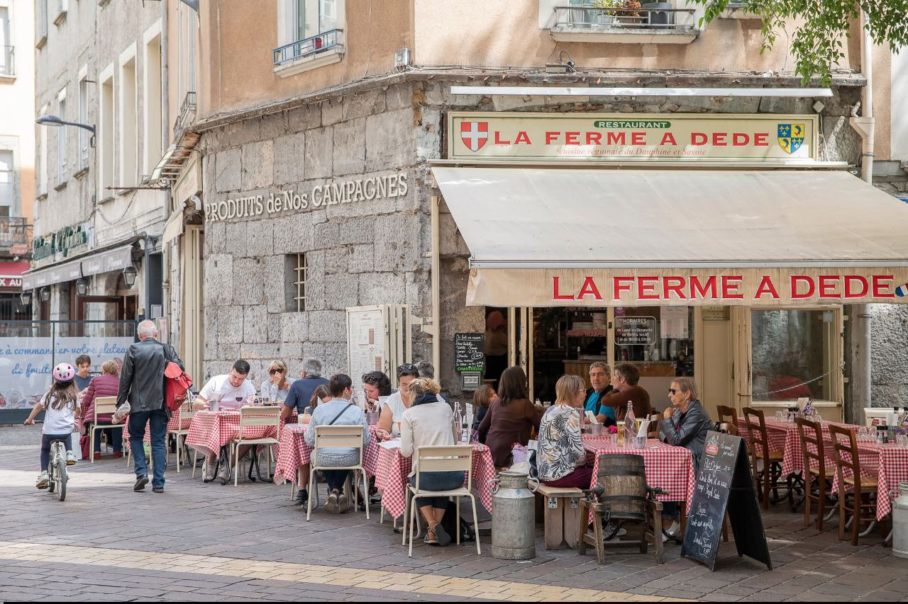
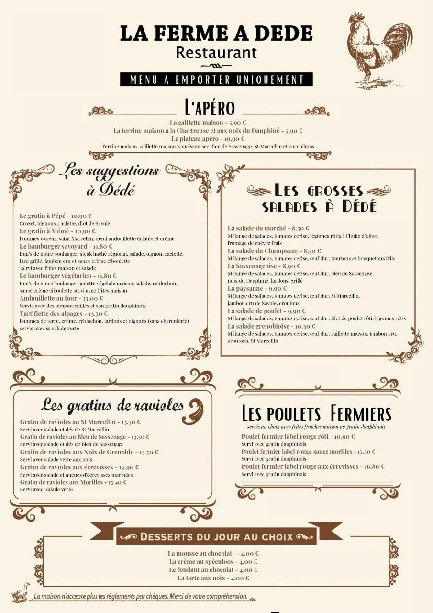
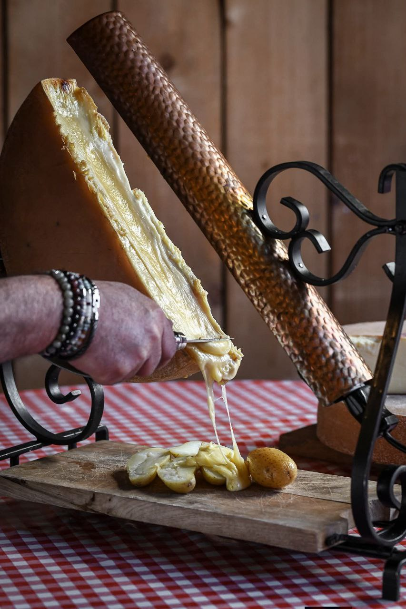
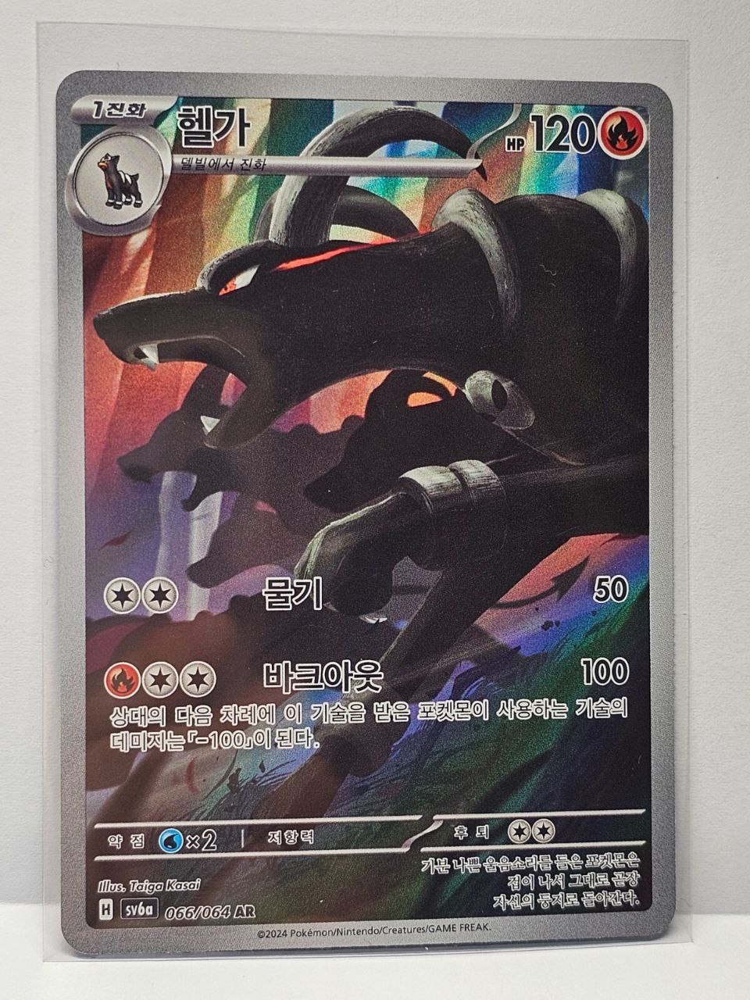
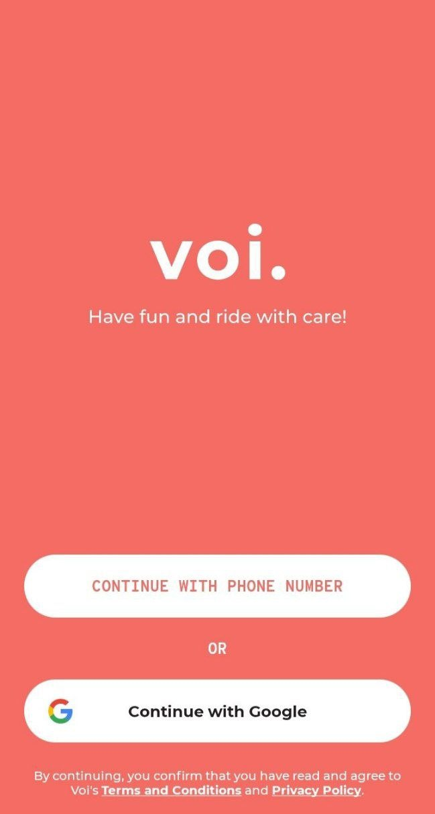
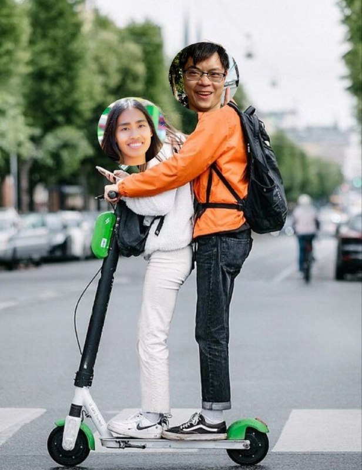
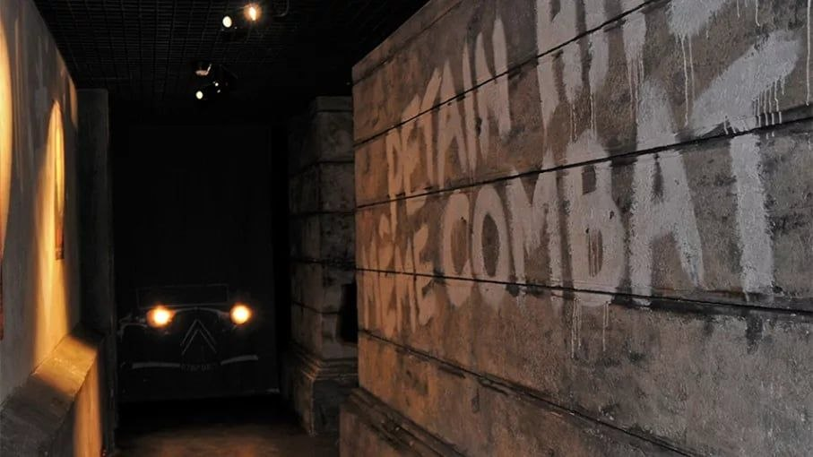
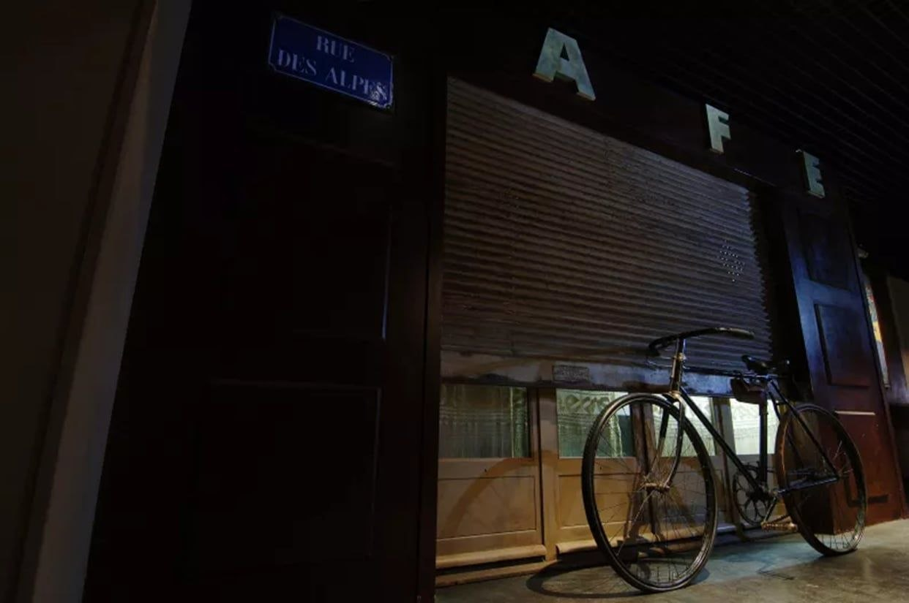
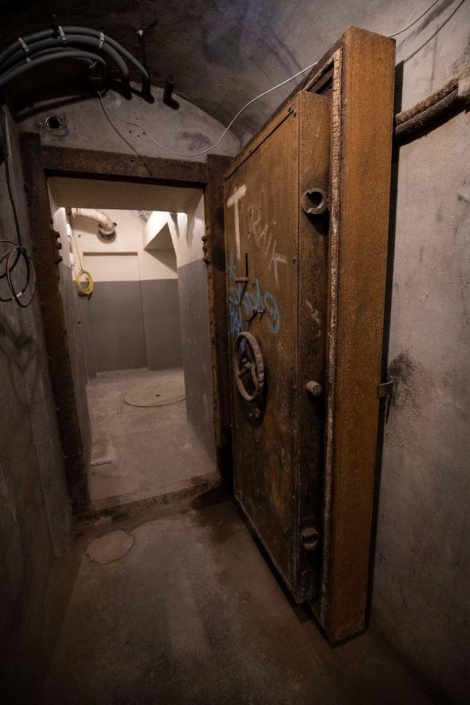

INT. MONICAFÉ – GRENOBLE, FRANCE – NIGHT
Rain streaks down the tall front windows. Outside, the Alps are barely visible. Inside were amber lights, wooden shelves with books and soft jazz. A small cluster of FIVE CUSTOMERS occupies the corner. Behind the counter, MONICA laughs as she pours wine. The front door opens. Cold air and rain rush in with DYLAN, IZZY, and FRED as they freeze.
She wasn't kidding.
About…?
She actually named it MoniCafé.
On brand, honestly!!
Y'all... I could demolish one of those sandwiches. This day took years off my life.
KUMUSTA, BITCH!!!
The café goes quiet. A customer turns.
Oh my God, Fred!
She has, like, 5 customers. Chill.
This is exactly why we can't take Fred anywhere.
Across the room, MONICA's smile flickers then turns into a teasing glare. She excuses herself, hands off a glass, and marches toward them.
Well.
You missed the ribbon cutting outside. My whole moment!! Nakakapagtampo!
Yeah, well—
There were… delays. These two were busy conducting an international make-out symposium!!
What the hell! That is NOT what happened.
I'm just saying... Tongues were involved.
Babe... Flight got delayed an hour. Passport control was excruciatingly slow for absolutely no reason. And—
—and il y avait un incident technique sur la voie.
Okay… wow. Finishing each other's sentences now??
No, but see, because once the TER stopped, the whole schedule collapsed and then the buffer—
Damn. Neurotic as fuck, Dylan. Breathe. It's fine.
We're open till 11. Did I really strike y'all as a grand-mère?
I'm just… yeah. Kinda bummed you missed the ribbon cutting. I actually cried a little. This place was packed!
Awww... Worth it?
Absolutely.
Also... Fred. Your "date"? She was NOT amused.
…Define "not amused."
She left early. But it's okay.
She lives in the same building as you. Duh!
Bitch, this is why I love you!! You're steps ahead.
I'm efficient! You're welcome!
Dump your stuff back there. I'll get you something warm. Tonight's on me, obviously.
So we didn't miss everything?
Please. The real grand opening's in three days.
You just missed the, uh, awkward rehearsal.
Now sit. Dry off. You look like wet luggage with wet dreams.
They drag their bags behind the counter.
But seriously… we're really proud of you, Moni.
MONICA looks up.
We watched you pour your entire life savings into this.
And we're really glad things are finally going your way.
Yeah... This is huge. You built a place people will come back to. That's not luck, Moni. This is you... You did this.
Okay. No. No.
Don't make me cry again, bitches. I already did that this morning!!
I'm just… really glad you're here.
They stand there for a moment longer.
CUT.
INT. GABRIEL'S SUITE – LATE NIGHT
The door closes behind them. DYLAN drops onto the couch. FRED is already halfway down the hall with a charger in hand.
I can't believe nobody brought a powerbank!!
Fred... You crossed continents with 35%. And one device.
I live dangerously!
IZZY is already filming. She swings the camera toward MONICA.
Wow, Moni. Your man is rich rich. When do we send the thank-you card?
Tonight, hopefully.
IZZY keeps recording as she wanders through the suite.
Okay… Two bedrooms.
Two bathrooms. Is that—
—oh my God. Is that a jacuzzi?
She spins around, delighted.
This place has a jacuzzi.
Explore. Please. Make yourselves at home.
IZZY grins and sends the video.
ON IZZY'S PHONE:
Hey, baby!! Check this out!
I really wish your meeting could've been postponed.
Sent.
Delivered.
She waits for a response. Nothing. She then pockets her phone and heads back downstairs.
The balcony door is open. DYLAN sits outside with a guitar.
IZZY stops dead in the doorway.
I found a love for me
Darling, just dive right in and follow my lead
Well, I found a girl, beautiful and sweet
Oh, I never knew you were the someone waitin' for me
'Cause we—
Oh my God. Are you serenading the Alps now?
They appreciate commitment. Unlike people.
You're really committing to Ed Sheeran, huh?
It's called emotional range. You wouldn't understand!
Dylan, I understand enough to know this is deeply embarrassing.
Really? You stood there for thirty seconds before talking.
I was deciding whether to push you off the balcony.
She turns away and heads into the kitchen.
MONICA is opening a bottle of wine. IZZY intercepts her mid-pour.
Nope. Absolutely not. You've been pouring since noon.
Sit. I got this.
MONICA laughs. From the bedroom:
Oh my God!!
The bedroom door slams and the lock clicks. IZZY's eyes widen.
Ooooh. Someone snapped someone.
DYLAN comes back inside, laughing.
They're just settling. A knock at the door. MONICA starts to stand.
Nope. Sit, queen. I got it.
IZZY opens the door. GABRIEL stands there in a sleek suit with a bouquet in hand.
Bonjour—Ah. You must be Monica's friends.
MONICA gasps from inside. She squeals and rushes over.
Gabriel!! You finally came!
This is Izzy—
—and Dylan.
And, uh, someone's barricaded himself in a bedroom.
Hi. Also—thank you. Seriously.
Yeah. This place is… unreal.
Bien sûr ! Anything for Moni.
If you'll excuse us—
(frowns) Wait. We're leaving?
DYLAN and IZZY exchange a look.
(whispers) I just opened a café…
I know. That's why this is special. J'ai une surprise. Please.
He turns back to IZZY and DYLAN.
Dylan and Izzy... We'll have a proper dinner soon. Tonight, I'm stealing her.
I'm sorry—
Oh my God. Stop apologizing and go.
We'll survive one night alone. Unless Fred never unlocks that door... Then I die here.
I'll say something nice at the funeral.
Liar.
MONICA hugs them quickly.
Come back soon, okay?
They nod. MONICA and GABRIEL leave. The door closes. IZZY slowly turns to DYLAN.
So. Ed Sheeran, huh? Softy boy.
You were moved.
Oh, please. I was offended!
She checks her phone. Still: Delivered. She exhales and drops onto the couch beside him.
So... Movie? Something aggressively corny. Just enough to knock us out.
It better keep me awake. Fred needs to open that door! I am NOT sharing a room with you.
Whatever you say, Izzy!
They settle into the couch... too close.
CUT.
INT. GABRIEL'S SUITE – EARLY MORNING
Soft morning light spills through the tall windows. The Alps glow faintly in the distance. DYLAN stirs on the couch. He squints his eyes while he searches for his eyeglasses. From the balcony, IZZY's voice drifts in.
No, I know… I know. It's okay... I just wanted to see your face.
DYLAN turns his head slightly. He hears fragments of IZZY's voice call.
IZZY (O.S.) (CONT'D)
You didn't ruin anything. Really... I'm just glad you called... It's fine.
IZZY (O.S.) (CONT'D) Yeah… I miss you too, babe.
DYLAN exhales quietly. He hears clattering from the kitchen.
Oh fuck yeah! This bacon survived the war.
DYLAN sits up just as FRED rounds the corner. He's wearing nothing but a brief and an apron. FRED spots DYLAN immediately.
<Rise and shine, motherfucker. It's a brand new day! Are you gonna stay in bed like a wuss? Are you gonna get up and grab life by the tit balls? Are you a wuss? Are you a wuss? Is u a wuss? You are gonna jump up in 3, 2, 1.
DYLAN groans and hurls a throw pillow at him.
Yeah, you go… show the world! Now put some clothes on, Jesus Christ, I don't wanna see THAT!
First of all, I'm not even in bed. Second, I'm fully clothed. Third—
—you are the only naked problem in this room. What the fuck, dude...
FRED picks up the pillow.
Rude. I am aggressively dressed.
IZZY steps in from the balcony with a phone in hand.
Oh, you're up, Dylan! Wow. I was honestly betting on death.
DYLAN gestures vaguely at FRED.
Can you deal with him? I just woke up.
What? I'm wearing a brief and an apron.
He's wearing a brief and an apron! Don't be such a prude, Dylan! Jeez.
It's amazing how everyone's just… fully okay with Fred's nudity. Like this is a choice we all made together.
FRED plops a plate down on the coffee table. DYLAN sees the pancakes and bacon.
Peace offering.
I'm so sorry about the bed situation. Danielle reasons. I didn't wanna wake you up at 2 AM! You were already dead on the couch. Promise it won't happen again. Breakfast is my formal apology.
Fine. I accept carbs as legal tender. Just for now... I swear to God, Fred... I was so tired!
I know! I am so sorry.
IZZY sits beside DYLAN on the couch. He notices that she's holding a small bundle of flowers, and a small box of chocolates.
It's such a good day today, Dylan.
Oh?
Eugene ordered these. Had them delivered this morning.
He really apologized for not being able to make the trip. Like… really apologized.
Oh. That's—
—that's actually really nice. Your boyfriend seems like a good guy. I mean, coordinating an international flower-and-chocolate operation from an important meeting? Respect.
Exactly! See, you get it.
Oh whatever. I'm still Team Dylan and Izzy.
Look at you two, all cozy on the couch like a Netflix movie poster.
Oh please! Stop making us a thing. We're just friends!
Yeah! We're just friends.
And anyway, I wouldn't want to be with someone who cries over fictional cats and then pretends it was about the plot.
Wow, Couch Boy! I wouldn't want to be with someone who snores like a malfunctioning appliance. At one point I thought Fred left a blender on overnight!
DYLAN tosses a napkin ball at IZZY.
Okay, love birds. Let's wrap it up, GET DRESSED, head to the café, and call everyone before Monica thinks we died in the Alps.
IZZY glares at DYLAN. DYLAN ignores her and grabs a pancake.
CUT.
INT. MONICAFÉ – MIDMORNING
Sunlight floods the space. Every table is occupied. FRED steps inside with IZZY and DYLAN.
Oh my gosh. I barely recognize this place.
It's actually… bustling in the morning.
Yeah. Completely different vibe.
A CAFÉ STAFF MEMBER approaches with a smile and a clipboard in hand.
Bonjour ! Vous êtes Dylan, Izzy et Fred ?
Oui, oui, oui!!
Oh, my gosh... Wrong hand gesture.
This way, please.
They're led to a cozy corner table with a RESERVED sign. The staff removes it.
I'll let her know you've arrived.
She offers a polite smile and walks off. They settle in. FRED's phone chimes. He sees a voice message notification from DANIELLE and a text message: Listen in private. 😋
Huh.
Well. Nature calls. Hydration consequences.
Disgusting. Go.
FRED ambles off toward the bathrooms. IZZY picks up a menu and frowns.
Why does this dish have seven consonants?
Because it's French, dumbass. What are you looking at?
This one.
Okay. So... It's a soft-poached egg over truffled polenta, seasonal wild mushrooms, herb oil, and aged cheese shavings.
Absolutely not. Translate it like a normal person.
Eggs. Fancy mush. Expensive vibes.
See? That's all I needed.
Jeez. What would you do without me?
Oh please. I keep you around as a tool.
So stay useful.
Wow. You just want me to dumb everything down for you!
Let's see who the dumbass is when we visit the Philippines!
Unlike you, I know how to use a translator!
CUT.
INT. MONICAFÉ – HALLWAY NEAR OFFICE – CONTINUOUS
FRED slows as he nears the bathroom. Voices drift from MONICA's office.
I need time.
I don't understand what there is to think about. Help me understand.
Please. Just... can we talk about this later? Why did you have to come to work and bring this up?
I'm sorry. I didn't mean to pressure you.
The door opens. GABRIEL steps out. He appears composed but shaken. He notices FRED frozen mid-step.
Excuse-moi.
He passes. MONICA follows immediately. She stops short when she sees FRED.
Uhh... How much of that did you hear?
Not… enough to understand it.
You okay? That didn't sound good.
I don't want to talk about this, okay? Not today. Thanks though. And please... Don't mention this to them. I'll fix it.
Yeah. Of course. If you need someone to—
You know. You know who to talk to.
He opens his arms. FRED gives her a quick hug.
Wait... Ew!! Are you—
Yeah, okay. Sorry. Danielle reasons!!
Hay nako! If you weren't my best friend, I'd kick you out right now.
Make it quick. We're slammed.
You got it, ma'am! I love you! Salamat!
He ducks into the bathroom and locks the door. FRED's phone chimes again. He sees another text message from DANIELLE: FRED, WRU? 🙄
FRED exhales and reaches into his bag. He pulls out a small, shiny, purple glass toy. He smiles.
CUT.
INT. DANIELLE'S BEDROOM – MIDMORNING
DANIELLE lies in bed, wrapped tightly in white sheets.
ON SCREEN: FRED W BENEFITS
She types: HEYYYYY 👀
She receives a notification:
She laughs under her breath. She pulls the sheets up higher. She taps the screen.
CUT.
INT. MONICAFÉ – RESERVED CORNER
FRED hurriedly returns from the hallway. He parts his hair back into place. He looks both exhausted and suspiciously satisfied.
IZZY bursts out laughing and shoves DYLAN.
I freaking hate you.
She turns and notices FRED.
You okay? Was that a number 2?
Or a number 69. If we know Fred, he was definitely up to something.
Well hello to you too, Sav. And shut up.
I'm so glad you finally joined us, Fred. I am already exhausted being the only single person here. I'm basically fifth-wheeling Paul and Jodi… and Izzy and Dylan.
PAUL (ON IPAD)
Sav, you're literally engaged. You're the least single person here.
SAV rolls her eyes dramatically.
Okay, can you guys stop pairing me with Izzy? I wouldn't want to be with someone who can't even read a basic menu.
Oh please. I wouldn't want to be with someone so clumsy he drops his spoon AND fork. Like, what? The waitress makes you nervous? Every sound makes you nervous?
Yeah… I see why you've been complaining, Sav.
Come on! I'm with Eugene!
Suuure.
Anyway... how's Jodi doing, Paul?
Three weeks before the delivery. It's getting close. We really wanted to travel but… yeah. A little critical right now.
He tilts the camera. On screen, JODI is asleep on the couch.
That's totally fair. I still can't believe you guys are the first ones having a baby.
Do you know the gender yet?
Nope. Jodi wants it to be a surprise.
What about you, Sav? When's the wedding?
Yeah! Holy shit. Lau finally proposed, huh?
Yeah... We'll see. I'm drowning right now. The upcoming subsidiary launch, the CSR programs… I'm very happy, but it's a lot.
Man… this is tearing me up. 15 years. And now everyone's actually getting what they want.
Yeah. LunaCare Co. My dream. My own newborn night-care company.
We're getting a discount though, right?
Discount? Please. You'll get a private nurse. What are friends for?
PAUL beams.
And look at these two. Izzy and Dylan are basically digital nomads now.
Well, kind of. I've been remote for a while... That's how I manage to travel.
Mine's still hybrid. But I got a promotion recently, so I have more flexibility.
Congrats to all of us.
On the screen, PAUL raises a water bottle. SAV lifts a champagne glass.
That's… a coffee mug, Izzy.
Whatever, dimwit.
Speaking of... where's Moni?
No idea. She was here when Shuo joined the call to congratulate her. Then she ran outside and said she'd be back?
Like we're not used to her going MIA.
In her own café though?
Relax. She'll be back.
IZZY suddenly perks up. She spots a server approaching.
Oh my God. Finally!!
Yeah. It only took you 8 minutes to choose…
…a simple omelette.
IZZY's phone buzzes on the table. The screen lights up. DYLAN notices it. His eyes linger for half a second. IZZY flips the phone face down without looking.
Thank you so much!!
The café staff sets down the food and hands FRED a menu. DYLAN glances once more at the face-down phone. Then he looks away.
CUT.
INT. MONICAFÉ – NIGHT – JUST AFTER CLOSING
The last café staff member waves goodbye and exits. The café is now spotless and quiet. MONICA sits at the big table with the gang when the door opens. DANIELLE walks in carrying a kraft paper bag.
Salut à tous !
She does la bise with Monica.
Everyone… I'm sure you've heard of her. Danielle.
She shoots a quick glance at FRED, then back to DANIELLE. DANIELLE turns to FRED. They exchange la bise too. They lock eyes for a beat.
Ahhh! Nice to finally put a face to the name.
Okay, Fred. I see!
Great catch.
IZZY extends her hand. DANIELLE ignores it and goes straight for la bise. IZZY laughs and returns it. DANIELLE does the same with DYLAN.
Guys… seriously, thank you for being here today. But you know you leave the city a day after my grand opening, right? You only have two whole days left. You don't have to spend the whole time sitting here.
Wait… is she kicking us out?
I mean… look at you.
You're eating through her entire inventory.
It's not that. Y'know... I appreciate it, I really do. But come on. Explore the city! Don't waste your trip sitting here. I don't want to monopolize your time.
DANIELLE casually raises a finger.
That's exactly where I come in.
I'll be your tour guide tomorrow.
Thought you had work?
Midterm break starts tomorrow.
Oh! You're a professor?
Well, if you must know… she's very, very, very good at teaching people new things.
Private lessons too.
Oh my gosh… Ew!
What? I'm proud of her academic work.
She's very… hands-on with her students.
Please stop talking. Gross!
Did you mean... Ich bin Groß.
What does that even—
Groß means big in German, dummy.
Ah yes.
I confirm.
Yeah... I see why Monica is best friends with Fred… and also best friends with Danielle. I see the pattern.
They're literally the same person.
Except I'm more fun than Fred.
Am I not, Moni?
Okay… no comment.
FRED eyes DANIELLE suspiciously.
Speaking of fun...
Are you guys going to help me with this?
Oh my gosh.
Is that—
Yes, girlies. Kanto vodka. Already chilled. Ready for shots.
We're drinking?
I don't see why not. I planned tomorrow's itinerary to start at eleven.
DANIELLE checks the clock.
It's 11:30 p.m.
You do the math, Moni. Do we have time?
I mean—
And do we not have your boyfriend's suite literally a block away?
Well... He's actually not—
And are we not all young, unmarried people with absolutely no good reason to behave tonight?
Exactly!
Well… when you put it like that—
It's settled! We are playing truth or dare… or shots if you're a pussy.
Okayyyy! Fun!
FRED examines the bottle.
Wow. Kanto vodka. I haven't had this in years.
You got the salted caramel kind? Damn.
Am I the only one here who hasn't tasted this?
MONICA, FRED, and IZZY shrug.
Well, loser.
You're taking the first shot.
Wait—where are my shot glasses—
Ah-ah-ah.
She reaches back into the bag and pulls out five shot glasses.
Of course she came prepared.
Okay. I'm in love!
DANIELLE pulls out a tiny empty spirit bottle and spins it like a spinner.
It points at DYLAN.
Yeah buddy…
You're definitely taking that first shot. You don't even get truth or dare.
Wait, shouldn't I at least—
Nope.
She pours the vodka into his shot glass. Everyone watches. DYLAN stares at it. DYLAN downs the shot. The four tap loudly.
Okay!!! The good Christian boy—
—took the first shot!
Oh… that's actually—
—good.
Hell yeah!!
Look at that. Dylan didn't die immediately. I'm proud of you.
DYLAN spins the bottle. It slowly turns… and lands on IZZY. DYLAN leans back. A mischievous grin spreads across his face.
Well, well, well…
IZZY squints.
Someone here has been very suspiciously hiding her phone notifications all day.
The hell? Who even notices that?
I dare you…
I didn't even choose dare!
…to show us what you've been hiding.
Fine!
Whoa. I didn't peg you as someone who violates a friend’s privacy.
Actually... No. Absolutely not.
IZZY calmly pours vodka into her own shot glass.
Yeah well. I'm not showing you people anything.
She throws back the shot.
DANIELLE, FRED, MONICA
Boooooo!
Coward!
Whatever!
I thought I was the buzzkill here.
IZZY spins the bottle. It lands on DANIELLE.
Truth.
FRED lights up immediately.
Oh! I got one. Earlier… you mentioned something about being fun.
MONICA immediately hides her face.
Nope. No. Take a shot.
What? You're embarrassed about our night in Lyon?
Just drink!
Relax. It was one night.
Actually… it was a three-day convention. Wasn't it?
She looks at MONICA.
And if I remember correctly, you spent two of those nights in my bed.
What?!
Ladies and gentlemen, this is why we should aspire to be more like Monica.
That explains why Monica and Fred are so close. They basically shared saliva through Danielle.
Okay! Yuck!
DANIELLE spins the bottle. It lands on MONICA.
Dare.
Tapang, ah!
Okay. I dare you… to kiss me like you did in Lyon.
That is NOT allowed!
House rules say otherwise!
Yeah, no backing out now!
MONICA rolls her eyes. Then suddenly she leans forward, grabs DANIELLE by the collar and kisses her deeply. DANIELLE pulls back and licks her lips.
Yep. That's how I remember it.
You guys are insane.
Says the woman who just devoured her friend's face!
MONICA spins the bottle. It lands on FRED.
Truth!
Oh I got one. Was Sav right about the sixty-nine earlier?
The what?!
No, no. Better question. What's the dumbest thing you've ever done while horny?
FRED thinks for a second.
Honestly?
Those two questions have the same answer.
He shows everyone a small shiny purple glass toy from his bag. DANIELLE smiles knowingly.
Need I explain? Here... Earlier... When we arrived.
DYLAN slowly leans back.
You know what…
It's my fault for asking that question. Actually... It's my fault for even being here.
FRED spins the bottle. It lands back on DYLAN.
Truth!
Actually… you know what? Dare.
Wow. I'm impressed. I didn't think you had it in you.
Okay. Easy. Flirt with Izzy in French for thirty seconds.
Oh God.
And be nice! We have two translators here—Moni and Danielle.
DYLAN turns toward IZZY. He looks straight into her eyes.
Tu sais… quand tu te tais cinq secondes, t'es presque charmante.
Et quand tu souris comme ça… ça devient dangereux.
Mais bon… je pense que j'aime bien vivre dangereusement.
IZZY holds eye contact for a second… Then bursts out laughing.
The fuck did that mean?
You know… for a second there, I actually believed him.
DYLAN rolls his eyes and spins the bottle again.
FADE OUT.
INT. GABRIEL'S SUITE – MIDMORNING
FRED hears a knock and opens the door. A CAFÉ STAFF MEMBER, wearing a MoniCafé apron, stands outside pushing a tray loaded with food.
Bonjour ! Delivery from MoniCafé.
Madame Monica says you should eat before your tour.
Wow. Merci ! Next time tell her to deliver this herself so she can help us eat it.
The CAFÉ STAFF MEMBER smiles politely.
Bonne journée… et bon appétit.
FRED wheels the tray inside. Across the room, IZZY is still glued to her phone. FRED sniffs dramatically.
Ah. The smell of breakfast. Finally strong enough to pry her eyes off the phone.
Is it wrong to keep your significant other updated?
She walks over to the tray. A small folded note sits beside the food.
Ooh. Monica left a note.
Croissants. Pandesal.
FRED immediately grabs a pandesal.
And a charcuterie board…
Tomme de Savoie, saucisson sec, jambon cru…
Okay, I can't believe I'm saying this, but I need Dylan awake for this. I'm not reading these words properly.
Sliced longganisa… garlic vinegar dip… atchara.
Damn. She really said international breakfast diplomacy.
IZZY quickly takes a photo and taps send. Three dots appear on her screen.
So… should we wake Dylan?
We leave in thirty.
IZZY doesn't respond. She continues typing. FRED walks to the bedroom. He flips on the lights.
Sir. Breakfast has landed. We also leave in thirty!
One… minute…
IZZY finally pockets her phone.
He's lucky the French aren't famous for punctuality.
Oh no. Danielle is punctual.
Right... But why do you always disappear back to our suite in the middle of the night? Wouldn't it be easier to stay with her? She's literally two floors down.
We… have arrangements.
DYLAN emerges from the bedroom.
Well look at that. The Sleeping Beauty awakens.
Give me a break. I have a headache.
You had one tiny shot. We had five... Minimum.
DYLAN doesn't respond and pours himself water. FRED grabs a croissant.
Monica really said... Eat before Danielle kills you.
They start eating while getting ready. FRED hears another knock and opens the door. DANIELLE stands there, bright and composed.
Bonjour, mes amis !
She gives IZZY la bise. She kisses FRED. She turns to DYLAN.
Someone woke up grumpy!
Ça va ?
Oui.
Girl, I love the look.
But those heels… you might want to reconsider.
Excuse me?
Since when did Grenoble develop Parisian attitude?
Not fashion criticism.
She gestures toward IZZY's shoes.
Just practical advice.
The day I planned… heels won't survive it.
What exactly are you planning?
DANIELLE smiles. FRED grabs a pandesal and takes a big bite. DANIELLE immediately points at him.
Hey—easy there.
FRED freezes mid-chew.
Save some of that for tomorrow.
CUT.
EXT. GRENOBLE CABLE CAR STATION – MIDMORNING
The glass "bubbles" of the Grenoble Cable Car drift above the city and glide over the Isère River. DANIELLE leads the group to the ticket booth. She leans casually on the counter.
Bonjour ! 4 billets aller-retour, s'il vous plaît.
The TICKET CLERK nods politely while tapping at the register.
Bonjour ! Ça fera €39.20.
DANIELLE pays and collects the tickets. Nearby, IZZY is holding her phone high as she films the glass bubbles floating above the river.
She pans the camera down toward DYLAN.
Hey, Dylan… I hope you're not a—how do you say it—
Poule mouillée ?
Izzy... If you're going to roast me, at least pronounce it correctly.
IZZY grins. DANIELLE waves the tickets.
On y va ?
I have no idea what that means, but sure.
Also—hey, lovebirds. Maybe stop flirting and let's get in the bubbles already?
They approach the boarding area as another gondola glides into the station. The glass bubble slows. The doors slide open. As the next bubble arrives, IZZY steps forward to board. Her sneaker slips slightly on the platform edge. She stumbles sideways right into DYLAN. DYLAN reacts instantly and catches her by the arms.
Get off me!
Wow. You're welcome.
FRED snorts behind them. They step into the gondola together. The doors slide shut. FRED presses closer to the glass.
Holy—!
IZZY raises her phone again. Below them the Isère River glitters. As the gondola climbs higher, the entire Alpine panorama opens... the Vercors, the Chartreuse, the Belledonne. DANIELLE watches their reactions with quiet amusement.
Not bad for public transport to our first destination, huh?
CUT.
EXT. LA FERME À DÉDÉ – MIDMORNING
The group approaches La Ferme à Dédé. IZZY slows down.
You really made us walk today.
That's not even half of it. I told you not to wear heels.
DYLAN reads the restaurant sign.

Wait… are we... cheating on Moni?
DANIELLE stops at the door and turns toward them.
Okay... I love Moni, but... MoniCafé is French-Filipino fusion.
This is where you actually get to know the regional cuisine.
Just maybe don't tell her you enjoyed it TOO much.
FRED presses his face close to the window. Inside, a table has a raclette grill melting thick slices of cheese.
Oh my God. I can see a raclette! Are we getting a raclette?
Do you want one? It comes with potatoes, pickles… And a charcuterie board which has basically the same things you had earlier this morning.
I wouldn't want you to have a redundant gastronomical experience.
What the hell? Fuck redundancy! That looks really good!
Fine. We'll get one.
They head inside.
FADE OUT.
INT. LA FERME À DÉDÉ – CONTINUOUS
DYLAN immediately begins scanning the menu. IZZY snaps a picture of the page and squints.

Okay… where's the English menu?
There isn't one.
Of course there is! Those people don't look like locals...
Wait… what are they having?
Tarte aux noix du Dauphiné.
Which means...
Walnut tart from the Dauphiné region. You dummy!
IZZY elbows him.
Oui. Bien sûr ! You cannot NOT have that.
DANIELLE leads them to a cozy corner table.
Grenoble is famous for its walnuts. The surrounding valley produces some of the best in Europe.
Then it would be disrespectful not to eat it.
Évidemment.
FADE OUT.
INT. LA FERME À DÉDÉ – LATER
A raclette grill arrives and is placed in the center. The server brings bowls of baby potatoes, plates of saucisson, jambon cru, and cured mountain ham, cornichons and pickled onions, and a casserole of Gratin de Pépé.

Alright, mes amis. First lesson in Alpine survival cuisine.
Raclette. Traditionally eaten after skiing in the mountains. You melt the cheese, scrape it over potatoes and charcuterie, and then pretend you'll burn it off later.
FRED immediately slides a slice of cheese under the heater. Seconds later it bubbles and melts. He pours the molten cheese over a pile of potatoes. IZZY films it.
Okay, that is extremely Instagrammable.
Suuuure, for the 'gram. Because you haven't already flooded a certain someone's inbox with enough photos to fill a gallery this morning?
IZZY rolls her eyes. FRED takes a bite. He leans back.
Okay. Jeez... This is the best country.
DANIELLE smiles quietly. DYLAN glances up.
You said that in Italy.
Uhhh... Italy was also very convincing.
Excuse me. Italian cuisine is wonderful.
But French cuisine is… definitive.
She looks mad.
Someone's going to get punished tonight!
Yes, ma'am… Agreed! The evidence is melting on my plate.
DANIELLE points toward the casserole.
And that... Gratin de Pépé. Rustic mountain cooking. It has potatoes, cream, and bacon. It's the type of dish that kept Alpine villages alive through winter.
So luxurious survival food…
Luxurious... Definitely.
Ahhh... that national pride. We are definitely in France.
FRED loads more cheese onto his potatoes.
Whoa. Fred, are you eating for two people?
Ahh. T'inquite. I'll help him burn it off tonight.
She places her hand on his leg.
CUT.
EXT. JARDIN DE VILLE – AFTERNOON
The park opens up under tall plane trees. The Isère river glints.
Welcome to Jardin de Ville. Oldest public garden in Grenoble.
She gestures toward the trees, the river, the mountains peeking above rooftops.
If you only have two days in this city, you have to stop here at least once.
Ah yes. The smell of grass… and raclette digesting.
Exactly why I brought you here. Walking prevents cheese coma.
IZZY suddenly stops. The sunlight filters perfectly through the trees.
Oh my God. Wait. This lighting is insane.
She rushes toward a small corner and lifts her phone.
Guys... Go on without me.
She starts taking selfies. DYLAN hangs back a few steps away, rolling his eyes at IZZY. DANIELLE and FRED sit down on a nearby bench.
Are you kidding me?!
Why are you crying?
I'm not crying!
My good phone died.
You're carrying two phones.
The other one doesn't have a camera this good!
You brought two phones and still managed to run out of camera?
Because I've been documenting everything today!
Yeah. Like a dumbass!
Fine. Make yourself useful then. Take photos of me.
Sure. But I'm charging you.
Fine. But first I need to see the quality of the pictures.
DYLAN raises his phone and starts shooting photos. IZZY immediately starts posing.
Okay wait... this side. No, this side.
Dumb bitch... You look the same on both sides.
Just take the picture.
DYLAN snaps a few. He previews his shots and stops on one photo. He stares at it... A second too long.
What?
Nothing.
Yieeee... You think I'm pretty!
Don't flatter yourself, troll.
You paused.
Because the lighting is weird.
Uh-huh.
DANIELLE and FRED watch them from afar.
Those two are going to spend thirty minutes arguing about framing.
Good. That gives us thirty minutes.
FRED notices a small chess table nearby where two old men are playing. He leans forward.
Okay. Quick question.
Which one is winning?
Hmmm...
The guy with the black pieces.
Really? He's down a rook.
Material isn't everything.
His knight controls the center. See?
And look at the bishop line.
Wait... Are you secretly the woman from The Queen's Gambit? So what happens next?
White moves the queen.
Right on cue, the man in white moves his queen. FRED's eyebrows shoot up.
Okay… that was creepy.
Then black sacrifices the knight.
The other player moves exactly that piece. FRED laughs under his breath.
What... Are you secretly controlling this game?
No. Just reading it.
FRED studies her for a moment. A slow grin spreads across his face.
Okay… that's kind of hot.
Oh really? You think so? Prove it.
FRED doesn't hesitate. He leans in and kisses her.
IZZY and DYLAN continue the photoshoot while FRED and DANIELLE remain wrapped in their own moment. The sun dips lower over Jardin de Ville.
FADE OUT.
EXT. JARDIN DE VILLE – LATE AFTERNOON
IZZY and DYLAN walk over to FRED and DANIELLE. DANIELLE straightens up. She brushes leaves off her skirt like nothing happened. IZZY and DYLAN exchange looks.
Ready to keep exploring?
Lead the way, professor.
They start walking along the shaded path. People lounge in the grass. Small souvenir stalls appear along the edge of the park. IZZY scrolls through DYLAN's phone.
Okay… these are actually good.
I know.
Wow. They are capable of being nice to each other.
They continue down the path. A small sidewalk stall sits under the shade of a plane tree. Binders of trading cards are spread across the table. DANIELLE suddenly stops.
Attendez… c'est bizarre.
She leans closer to the table.
Ici ?
She starts flipping through a binder of Pokémon cards and freezes. She sees a page filled with Houndoom cards printed in Korean. The others stare at her.
Okay... Didn't strike you as a Pokémon nerd. I thought that was Monica.
DANIELLE shrugs. Her eyes don't leave the binder she is flipping through.
Yeah. I guess... She rubs off on me.
You know... She uses them as bookmarks.
And she loves Houndoom.
Yeah, okay. That sounds like her.
DANIELLE pulls out two cards and turns to the KOREAN VENDOR behind the stall.
Combien pour ceux-là ?
25€.
DANIELLE's eyebrow rises. IZZY notices.
What's wrong?
Yeah… these are way overpriced.
Peut-être… 20€ ?
Non. Bon prix déjà.
DANIELLE sighs and opens her wallet. A Pokémon card slips from the vendor's table. IZZY picks it up.
저기요… 이거 떨어뜨리셨어요.
The VENDOR freezes. He quickly takes the card.
아! 감사합니다!
이거 꽤 비싼 카드예요.
괜찮아요.
한국어 잘하시네요. 어디서 배우셨어요?
남자친구가 한국 사람이에요.
2년 정도 만났어요.
그래서 한국을 자주 가요.
사실 그 전부터도 매년 한 번씩 갔어요.
한국 너무 좋아요.
아, 그래서 발음이 좋네요.
친절하시네요. 그럼 제가 조금 깎아드릴게요.
He taps a new number on the calculator: €15.
이 가격이면 괜찮죠?
네, 감사합니다.
DANIELLE stares at the new price and pays the VENDOR. Then looks at IZZY.
What just happened... You speak Korean?
Korean, Spanish, Greek, Tagalog... And obviously English. I guess a bit of Latin too. But it's a dead language, so...
Color me impressed.
Yeah, I'm somewhat of a polyglot.
Unlike some guy who barely speaks three and is so smug about it.
Whoa, whoa. You're trying to hurt Dylan, but your words are like daggers and they're hurting me too.
But at least you speak Tagalog.
Imagine being Taishanese and not knowing the language… and instead he knows French and Mandarin.
Whoa. Low blow.
And for that reason, I'm not sending you the pictures I took of you earlier.
What?! You can't do that!
Watch me.
You took like fifty photos!
Exactly. A lot of leverage.
Pikon! You're just mad I'm cooler than you.
Cooler? You tripped getting into the cable car this morning.
Okay, just make out already.
Whoa. I wouldn't kiss someone whose mouth can't even speak his heritage language.
Hey, I speak English, French, Mandarin, and a little German. That's already hard mode.
You know what? That's it. I'm deleting your photos.
DYLAN taps his phone. IZZY lunges for it.
Don't you dare!
They wrestle lightly over the phone. FRED sighs.
You know what… let's just leave. They'll eventually follow.
He wraps an arm around DANIELLE as they start walking ahead. A moment later, IZZY and DYLAN jog to catch up. FRED glances back.
Wow. You done, Setojeda?
Don't you dare taint my surname like that.
And you think I want to be paired with you? I'm the one whose surname is being tainted here.
And here we go again.
Setojeda?
Combination of their names. Seto and Ojeda. Jesus, do you even know us?
Well… you're the only one I want to know better.
She leans closer to FRED and lightly kisses his neck.
CUT.

EXT. STREET – OUTSIDE MAISON LOUISE – EARLY EVENING
Rain hits suddenly. DANIELLE and FRED sprint across the pavement. Ahead, the façade of Maison Louise emerges. The structure is made of matte charcoal stone and pale alpine wood. Inside, a few chocolates sit like artifacts. They duck under the recessed entrance. FRED instinctively pulls DANIELLE closer, shielding her from the rain. They're dry.
Behind them, IZZY and DYLAN struggle with an umbrella they're sharing. A gust of wind flips inside out.
Oh my God. Seriously?!
The umbrella flies. DYLAN runs after it.
I got it!
Leave it! It's gone!
DYLAN grabs the umbrella mid-street and runs back. They stop in front of each other.
You look ridiculous.
Wow, Izzy! You're the one who brought a useless umbrella.
It was working until you touched it.
Sure. Blame everything on me!
Beat. They just… look at each other. Rain dripping from their hair.
You're soaked.
So are you.
You look… worse.
IZZY scoffs then laughs. DYLAN cracks. They both start laughing.
Setojeda! You know the goal is shelter, right? Not full immersion. Save the romantic rain scene for later. Get in here!
They jog under the entrance with FRED and DANIELLE.
Putain… météo said ten percent.
Well… We found the ten.
We should probably go. Moni might welcome wet luggage with wet dreams, but this place?
This is… expensive expensive.
Should we just call a taxi?
I have Uber.
No need.
This was actually on the itinerary. Just… not today.
Louise is a friend of mine.
Of course she is.
CUT.
INT. MAISON LOUISE – EARLY EVENING
They step inside. A staff member approaches.
Bonsoir. Bienvenue chez Maison Louise.
Puis-je vous aider ?
Water drips onto the floor. IZZY gives an awkward smile. DANIELLE steps forward.
Bonsoir. On voulait jeter un coup d'œil à vos chocolats.
Bien sûr. Un instant.
She gestures. Another staff member discreetly brings towels. DYLAN takes one. IZZY grabs one immediately.
Thank you… oh my God.
Maison Louise est un chocolatier de voyage—
Uhh… English, please?
Oui, s'il vous plaît.
Maison Louise is a chocolatier de voyage. Each collection is inspired by a place. Not to replicate it, but to interpret it through French technique.
We call these collections Voyages. Each one explores a distinct idea of taste. Three chocolates per destination. The world is the palette—
—but the technique remains French.
They turn. LOUISE approaches. DANIELLE smiles and leans in for la bise.
Danielle.
I was expecting you tomorrow.
Why are your friends… drenched?
Grenoble weather betrayed us. Guys, this is Louise.
They all wave.
Merci. Je m'en occupe.
The GUIDE steps back.
Danielle… your first time visiting during business hours and you think I'd give you the standard experience?
Don't be ridiculous.
Don't worry.
I think I still have some of your clothes from last time.
FRED's head snaps slightly toward DANIELLE.
Assuming it's okay to lend to your friend?
Yeah. Of course.
We can find something for you.
I have spare pieces from our team sessions.
FRED gives DANIELLE another look. DANIELLE ignores it.
CUT.
INT. PRIVATE TASTING SALON – MOMENTS LATER
They're led into a private tasting salon. The room is defined by stone walls, pale wood, and soft lighting. Each chocolate is placed individually on the table. IZZY looks around.
Take photos.
You still owe me.
I'll be nice tonight. I promise.
Yeah? After bringing that broken umbrella?
Wow. This feels like a museum.
Or a very expensive lab.
Good.
That's the intention.
I'll be right back.
LOUISE returns carrying a red satin dress... and a minimalist shirt and trousers, each marked with a discreet Maison Louise logo. She hands the dress to IZZY and the shirt and trousers to DYLAN.
So... I wasn't expecting you tonight.
The Canton voyage isn't ready yet.
But we have…
Buenos Aires, Istanbul, Cairo, Moscow, Bangkok, Montréal—
Oh, perfect.
Dylan grew up in Montréal!
We'll take Montréal, then. And the selections I mentioned last night. Manila for Izzy, Berlin for Fred... and the classic Grenoble for me.
I'm sure they'd appreciate your interpretation of their countries.
Of course.
She makes a small notation on her list, then hands it off to a STAFF member.
We'll prepare those for you.
The STAFF nods and exits quietly.
We better get changed then?
Yes, of course. You can change through there.
IZZY and DYLAN disappear toward the restrooms and leave the three of them.
FRED glances between them.
So… you two are close friends, huh?
LOUISE doesn't answer immediately. Her eyes remain on DANIELLE.
We are. Very much so.
C'est qui ?
Un ami de Monica. De passage.
Ah. Mais... C'est ton copain ?
Il est touriste, Louise.
Okay…
I'm sensing I'm being discussed?
You are.
Great. Love that for me.
DYLAN and IZZY return just as a STAFF MEMBER arrives, setting down three plates. Each plate has three chocolates with neatly printed tasting cards. LOUISE glances at them, then gestures lightly toward the plates.
I'll introduce the signature piece from each city. The other two… I'll leave for you to discover.
LOUISE places the first plate in the center.
Grenoble. A dark chocolate shell filled with walnut praline, layered with a light Chartreuse-infused ganache, and finished with a touch of alpine honey.
DANIELLE picks it up and bites into it. The chocolate cracks softly.
She pauses as the layers settle.
Oh la la. You get the walnut first… then the herbal note comes in after. It's not sweet. Mmm...
She turns to FRED and leans in, letting him take the other half from her mouth. THEY both laugh quietly. LOUISE watches them.
LOUISE sets down the next piece.
Manila. Calamansi gel at the center, surrounded by mango ganache, with a thin layer of coconut cream.
IZZY takes a bite. She gestures to DYLAN to center his camera correctly. She takes a bite. Her eyes widen.
Wow... That's really calamansi. That's exactly it! Oh, Wow.
And the mango comes in after… it's smoother than I expected. Wow!
She looks at LOUISE.
It feels like home… but more refined.
LOUISE smiles. She places the next chocolate.
Berlin. A cherry reduction center, hazelnut praline, and a spiced ganache.
FRED picks it up.
Alright. Let's see.
He bites.
Okay, that's strong. Then the hazelnut balances it out.
Okay. Yeah… It's a ten for me! Oh! Danielle, you gotta taste this too!
He turns to DANIELLE and shares the other half with her. She laughs.
LOUISE watches them and clears her throat softly. LOUISE places the final piece.
Montréal. Maple reduction folded into a dark milk ganache, layered with ice wine gel and a wild berry pâte de fruit.
Dylan picks it up. It slips slightly. He almost drops it. IZZY giggles.
I got it.
He takes a bite. He pauses.
The maple's not too overwhelming. And the ice wine… it's sharper than I expected.
He nods slowly.
Ouais, c'est vraiment exquis.
Vous avez parfaitement réussi. Bravo !
They each finish their remaining chocolates. A quiet pause settles over the room. DANIELLE steps forward and gently takes LOUISE's hands.
Thank you. This was… exceptionally done. We'll come back properly next time. And I'm sorry for showing up like this.
LOUISE glances at their still slightly damp clothes, then back at DANIELLE.
You're always welcome.
Surtout quand tu es seule.
Her gaze shifts and lands on FRED. DYLAN catches the shift.
FADE OUT.
INT. TAXI – EVENING
Light drizzle taps against the windows. Streetlights reflect across the wet pavement as the car pulls away.
Okay… that was insane. Best chocolate boutique I've ever been to.
It's also the only chocolate atelier you've ever been to.
Excuse me? Untrue!
C'mon! It was so obvious! You took 20 photos of everything!
It's really a crime to share your experience with a loved one, huh? Okay.
DANIELLE leans forward toward the driver.
À la boîte noire, s'il vous plaît.
The driver nods. DYLAN turns.
Wait. We're going there?
Definitely.
I thought we were heading home.
Already?
The night's still young.
The cable cars don't close until midnight. We have time.
Oh, hell yes.
Now we're talking.
Finally. Something that doesn't require a tasting guide!
You needed one.
I understood everything. Jeez. Louise spoke English.
You said "wow" four times. That's vocabulary limitation.
At least I don't almost drop luxury chocolate like it's street food.
Yeah, that was tragic.
I recovered.
Barely.
Can I get one ally in this car?
You're on your own.
IZZY scoffs and leans back. DYLAN glances at her just for a second then looks away. The taxi turns into a narrower street. Music and distant chatter start to seep in. FRED grins and looks at DANIELLE.
CUT.
INT. LA BOÎTE NOIRE – NIGHT
They squeeze toward the bar. FRED squints at the chalkboard menu.
Okay… this looks crazy!!
We getting started or what?
Bienvenue à Grenoble.
DANIELLE taps the counter.
Let's order drinks when I get back. I'll be quick.
IZZY's phone vibrates. She glances down and smiles.
Wait. I'll come with you.
DANIELLE and IZZY disappear into the crowd.
Okay… what's the strongest thing here? What's that?
Chartreuse… verte… something...
Yeah, no. Don't do that.
Why not?
Because that's not a drink. That's a decision you regret immediately.
Oh, come on.
What do I strike you as, a pussy?
That's you, Dylan.
Whoa. Okay.
You don't even know what it is.
Doesn't matter. Strongest thing on the menu, that's what I want.
Yeah. That's how you end your night early.
I just survived whatever that was at Louise's.
I'll survive a drink.
This about Louise?
What? No.
…Maybe a little.
You okay?
Yeah. I'm fine.
Why does it even matter? I thought you and Danielle were just hooking up.
Yeah.
Yeah. We are.
CUT.
INT. WOMEN'S BATHROOM – SAME TIME
DANIELLE fixes her hair in the mirror. IZZY stands beside her, smiling. She's staring at her phone while she texts. DANIELLE glances at her.
You're still on that?
He's just been… busy. He's available now.
Funny. He's busy when you're free…
and free when you're out.
It's not like that.
Then what is it like?
IZZY shrugs.
Look… I get missing someone. But not to the point where you forget how to exist without them. You can miss someone… and still be present where you are.
I just think… a good relationship doesn't pull you out of your own life.
Oh.
You really read people easily... And surprisingly know a lot about relationships, huh?
Trust me.
I do.
Tonight's not Paris.
But it can still be a very good night.
So be here.
Okay. Yeah.
Good. Because you're offending your travel guide!
CUT.
Play the track while reading the scene below.
INT. LA BOÎTE NOIRE – NIGHT
DANIELLE and IZZY push through the crowd. FRED looks up and locks onto DANIELLE for a second.
What took you so long?
You girls do a full glam in there or what?
Wow. Fred thinks we're pretty.
Of course. The pretty girls are ready...
to cause trouble!
Oh! Now THAT... That's exactly what we need.
DANIELLE turns to IZZY.
Somebody promised to give each of us five euros for every text she sends to this man.
Excuse me? I did not—
I'm suddenly very invested in this. I'm ready to be fifty euros richer.
I'm watching her!
Yeah, I support this policy.
You're all so annoying.
Now let's drink!
FADE OUT.
Play the track while reading the scene below.
INT. LA BOÎTE NOIRE – NIGHT – DANCE FLOOR
The music switches. DYLAN squints toward the speakers.
What the hell is this?
Holy shit. I love El Alfa! Let's fucking gooooooo!
Before anyone can react, FRED grabs both DANIELLE and IZZY and yanks them into the center.
FRED is already moving. He bounces in place. His feet move quickly. DANIELLE steps in close behind him and matches his rhythm. She steps in front of him and pulls him closer by the shirt.
IZZY grabs DYLAN's wrist.
Nope. You're not exempt.
IZZY pulls him in. DYLAN tries. He makes smalls steps. IZZY stops and looks at him.
No.
She grabs his arms and starts moving them for him, left, right, bounce, puppeting him.
Stop! I feel violated.
Psh! Nope. Bots don't get violated.
Excuse me! I'm a real boy.
Yeah, that's exactly what a bot would say.
She keeps going. She turns him slightly and pushes his shoulders to face her. DYLAN tries to resist, fails, and ends up laughing. DYLAN steps back and accidentally steps on someone's foot. He freezes.
Oh shit. Sorry!!
You're good!
Before he can recover, someone bumps into him. A drink spills straight down his Maison Louise shirt. He looks down. IZZY bursts out laughing.
Oh my God. You're getting banned... FOREVER!
From what?
From Maison Louise.
Je suis désolée… mais ce niveau de négligence n'est pas compatible avec la maison.
IZZY stares then giggles.
I don't even understand what you said, but that did sound like her. What the hell? The voice was on point!
They continue dancing. IZZY spins once, nearly loses balance, grabs his arm. They both laugh.
IZZY and DYLAN glance over. DANIELLE pulls FRED in and turns her back to him. FRED steps in behind her without hesitation. She drops lower. Her ass touches his crotch. His hands catch at her hips.
Okay… I can't compete with THAT.
DYLAN glances at the dance floor again, then back at her.
Yeah. We're outclassed.
They move to the corner. IZZY exhales and fixes her hair.
I swear, I had a plan.
Oh yeah? What was it?
Step 1... look good. Step 2... vibe. Step 3... not get immediately overshadowed.
Ooh. Strong plan. Poor execution.
Excuse me. I looked great.
You did. You just picked the wrong competition.
She glances at him and then looks away.
Wow. That almost sounded like a compliment.
Don't get used to it, troll. You're just wearing Danielle's clothes. That's why!
Right. That's it, huh?
They both watch the dance floor again.
You don't really dance, do you?
I do. Just not like that.
Good. Because I honestly don't either.
Then a new song starts. IZZY's face lights up instantly.
Play the track while reading the scene below.
Oh!!! This one. This is our jam.
She grabs DYLAN's hand and pulls him back in. DYLAN resists.
You really want me to dance again? After the foot incident? The drink situation?
Please. That built character.
She tugs him closer.
C'mon. Corny mo! Just like old times.
This song is so 2026.
Exactly.
Just like Paul and Jodi forcing all of us into that dance number at their wedding.
That was such a weird song to dance to.
And yet... You ate.
DYLAN scoffs. IZZY pulls DYLAN in. They face each other. She taps his chest twice to the rhythm. They step side to side. IZZY turns her back to him and grabs his hand, pulling it lightly across as she spins out. He lets go. She turns back in front of him. She points at him, mouthing the lyrics. DYLAN smiles. She grabs his wrist and spins him halfway, then pushes him back into place. DYLAN steps on her foot.
Ow!!
They both laugh.
FADE OUT.
Play the track while reading the scene below.
INT. LA BOÎTE NOIRE – NIGHT – DANCE FLOOR
The music shifts. The crowd slows. DYLAN glances up at the speakers.
I swear… they're just playing the most random songs tonight.
Oh please, softboi.
Weren't you just serenading the Alps with Ed Sheeran the other night?
That was different. I just wanted to see if the guitar was properly tuned.
Mm-hmm.
I do enjoy a breather. The DJ just lets the crowd reset... reconnect.
Don't tell me this is your first time?
DYLAN pauses. IZZY's eyes widen.
Oh my God. It is, isn't it?!
I mean… it's been a while, okay?
Wow. Look at you. Out here… experiencing nightlife.
Yeah, thanks. I feel very educated.
They both laugh. They glance over. FRED and DANIELLE now move slower. Her arms rest on his shoulders. His hands at her waist. They look at each other's eyes.
This is… nice.
I didn't expect to actually enjoy this. I thought we were just… showing up for a grand opening.
Yeah.
This is nice.
You're more fun when you're not staring down at your phone, you know?
Oh, relax.
I'm always fun.
That's... debatable.
Excuse me?
I don't know. Half your personality is "typing…"
IZZY lets out a laugh.
Okay, wow. Rude.
…Maybe fair.
I'm just saying. This version's better.
She holds his gaze for a second, then looks away.
Hey.
I hope I didn't offend you earlier. The Taishanese thing? I was joking.
Please.
You just want me to send you the photos later.
Okay, yes... but also, no. I was kidding.
I know.
Low blow though.
You survived.
They share a small laugh. They keep swaying lightly to the music.
Umm... I'm sorry your boyfriend couldn't make it.
Would've been… kind of romantic, no?
Dancing in France. Even if it's… here.
IZZY shrugs.
But... I AM having fun.
Even if it's with someone who thinks a cocktail-stained shirt is a look.
Oh wow. That's crazy.
Sounds like someone I know.
Exactly.
They both laugh. They stay there for a few minutes.
IZZY's phone starts ringing. She glances down. DYLAN clocks it immediately.
Ah. Speaking of your prince charming.
Wow. You're really trying to make five euros tonight, huh?
The phone keeps ringing. She hesitates. IZZY tilts her head.
Okay but... Danielle said texts. This is a call. That's a loophole.
Of course you'd find a loophole.
The phone keeps ringing.
Take it. If you want.
Yeah… I think... I will.
I might head back to the suite after though.
How? Where are you going? Danielle has the tickets.
I'll figure it out.
You want me to come with you? I'm kind of done here anyway.
No, no. I'll be fine.
Stay. Have fun. PLEASE.
DYLAN holds her gaze for a second then nods.
Okay.
IZZY smiles. She answers the call as she backs away.
Hey…
She gives DYLAN a quick wave. He lifts a hand in return. She disappears into the crowd.
He stands there a moment. The music keeps going. He glances across the floor and spots FRED and DANIELLE weaving through people then slipping out of sight toward the restroom.
DYLAN glances up at the speakers again.
I should tip the DJ. The song feels a little too on the nose.
FADE OUT.
INT. LA PERLE DES MERS D'ORIENT – LATE NIGHT
A small bell chimes as IZZY enters. A faint smell of milk tea and sugar fills the air. IZZY sees Filipino pastries on display. IZZY flips the camera.
Oh my God. Wait.
You see this?
I did not expect to find a Filipino bubble tea shop in Grenoble.
On screen, EUGENE smiles.
That's actually kind of impressive...
I love the concept! Apparently, the name of the shop means The Pearl of the Orient Seas, you know... Referring to the Philippines.
She walks to a corner table and sits, still holding the phone up.
And they sell milk tea with tapioca pearls with famous Filipino flavors! The pearls are the highlight! Brilliant.
—So… you're alone?
Oh. Uh—Yeah.
Where are they?
They're still at the bar.
A bar?
You didn't tell me you were going out.
Yeah, sorry. They had this dumb rule. No phones while you're inside.
Like, actual enforcement.
Right. So you were just… out there all night.
Not all night. Just dancing. It was fun. We were with Danielle.
Daniel? A dude?
No. The Frenchwoman?
Right! The one with Fred! I remember!
I'm glad you're having fun, babe.
Just wish I knew where you were, that's all.
Yeah… I know.
A SERVER approaches, setting down her drink.
Magandang gabi po. Ube milk tea po, ma'am. Enjoy!
Ay, salamat po.
She takes the cup with a delighted smile. EUGENE notices.
You're speaking Tagalog... In France?
Yeah. I mean... Like I said... It's a Filipino bubble tea shop in France. Also, you know? I got to speak Korean today.
Wait. Oh my God… this is so good!!
Show me.
She lifts the cup toward the camera. The purple tapioca pearls swirl in the milk tea.
Look. It's ube.
Hay... I wish you were here. You'd love this.
Yeah… I would've liked that. That looks really good.
IZZY relaxes into that and takes another sip.
Today was actually insane. We did the cable cars, then lunch, then...
this whole tour thing. Oh! and I have so many photos. Actually… some of them are on Dylan's phone.
Dylan?
Yeah, my phone died earlier so...
You're letting him take your photos now?
It was just easier. He had the better camera anyway.
Right, right. Of course. Just making sure you're not outsourcing too much.
IZZY laughs and brushes it off. EUGENE studies her.
You look good, by the way.
Yeah?
Yeah. I like that on you.
Maybe just… something warmer next time? It looks cold there. And you said it was raining.
IZZY glances down at her outfit.
I was wearing something else... I had to borrow Danielle's. But... Uhhh...
Yeah. I'm fine.
I know.
I just worry.
IZZY takes another sip.
I really wish you were here. Like… actually here.
I know, babe. I wanted to be. I just had that very important meeting, and...
the next couple of days are going to be packed. That's actually why I called. Before things get crazy.
They don't talk for a moment.
You know I'm working hard for our future, right? So we can be together... Buy that house that we both like? Have kids?
Yeah… Babe, you don't need to explain.
But hey...
I like this. Being with you. Even virtually. I miss you so much, babe.
IZZY smiles back.
I miss you, too. I'll be back soon.
FADE OUT.
INT. LA BOÎTE NOIRE – RESTROOM – LATE NIGHT
The bass from outside vibrates through the walls. A cubicle door slams shut. FRED pushes DANIELLE against the wall. They kiss. DANIELLE's hands move to his waist. She tugs at his belt. FRED exhales, half-laughing, half-breathless. He unzips his zipper.
FADE OUT.
EXT. LA BOÎTE NOIRE – NIGHT
DYLAN paces near the entrance, hands in his pockets. He checks his phone.
ON SCREEN:
@Fred, are you still there? Can't see you.
No reply. He exhales. The door swings open. A GIRL steps out. She spots him immediately.
Oh! You're done stepping on people's feet now?
Oh, I said sorry.
…Again, sorry.
Relax. I was kidding! C'mon.
So… where's your girlfriend?
Girlfriend?
Yeah. The one you were dancing with.
Oh...
No, no. She's not my girlfriend.
Just a friend.
Oh! Cool.
She gestures toward a parked pickup truck nearby.
You wanna sit?
DYLAN eyes it then her.
My parents told me not to do this with strangers.
What are you, twelve?
I was a very obedient child.
C'mon. We're literally out in the open.
He hesitates then follows. They hop onto the back of the pickup truck. They sit side by side and face the street.
I'm Geraldine. Filipina. Born and raised in Toronto. Not a stranger anymore, huh?
As you can see, I speak English. French too. That's why I'm here.
And Tagalog?
Nope.
Another Philippine language?
I know. Disappointing.
A little. But I get you.
So... I work in IT audit. Ubisoft. They sent me to check Annecy's office... Do a full 360.
Figured I'd detour here with colleagues.
But... They're… occupied.
Yeah. Same situation. Got ditched for… extracurricular activities.
Rough.
Welcome to Europe.
DYLAN chuckles. She sticks out her hand.
Alright. Official introduction.
He takes her hand and shakes it.
Dylan. Taishanese. Born and raised in Montréal. Senior software engineer at Meta.
Oh. We're flexing now.
You started it with Ubisoft.
Fair.
So what are you doing here?
Oh. I'm still based in Montréal. I'm just here for a friend's café opening. MoniCafé.
Wait. The French-Filipino fusion spot? I think I saw posts about it.
Yeah. That's the one.
Looks legit. I should drop by. You're a supportive friend, Dylan.
Yeah. I try.
Also free food.
They keep talking. They sit side by side. Their legs dangle off the tailgate and their shoulders almost touching.
So… let me get this straight. You got dragged into a bar… stepped on someone… okay... maybe a lot of people... got a drink spilled on you… and lost your friends?
That's a very unfair summary. But yes.
Rough.
I'm still having a great night... despite everything.
You actually are.
Surprisingly, huh?
They sit closer now.
So… That girl... She's just a friend, huh?
Yeah.
You don't sound convinced.
You don't think I'm convincing?
You know, Dylan. You're easy to talk to.
That's new.
No, seriously.
Most guys at that bar were… not this.
Not stepping on people?
Not thinking before they speak.
They hold eye contact a second longer than before. GERALDINE shifts. She leans in for a kiss. DYLAN registers it, then gently leans back.
Hey... I… I'm just here to talk tonight. No offense. You're—
—you're very attractive. Respectfully. Just…
GERALDINE waits. DYLAN pauses.
Girl back home, huh?
I—well, y—no, but it's... complicated. But, um, it's not where I'm at right now.
GERALDINE pauses then nods.
Okay.
That's fair. Sorry. Misread that.
No, you didn't.
I'm just confusing. I'm so sorry.
She laughs. DYLAN hops down from the truck.
I should probably head back to my place.
What?
No.
You don't get to run away after rejecting me.
I'm not running away.
Mm-hmm.
Let me drive you. To make up for that… incredibly embarrassing moment.
You don't have to do that.
I insist.
Also... I was supposed to be the sober driver tonight. They ditched me. I'm pissed off. Kind of. So now I need an official reason to leave. This benefits both of us.
Okay. But I have conditions.
Oh, this should be good.
I'm taking a picture of your plate.
My—what?
DYLAN takes a picture of her plate. He steps closer and snaps a quick selfie with her. She laughs.
Okay, that's a lot.
And—
I'm taking your number.
That feels like overkill.
I like redundancy.
She rolls her eyes. She takes his phone and inputs her number. She hands it back.
DYLAN immediately calls it. Her phone rings. She lifts it.
See? Mine. We good?
DYLAN nods. They hop off the truck and get into the car.
Just so we're clear… strictly professional ride.
As it should be. And I expect a receipt.
Okay. But leave me a 5-star review.
Hmmm... Depends. What's your music situation?
GERALDINE scoffs and reaches for the console.
Wow. You're already judging.
She scrolls. Music starts playing.
Okay… not bad.
I hope "not bad" gets me five stars.
Let's not get ahead of ourselves.
Drive first.
She laughs and drives off.
FADE OUT.
INT. GRENOBLE CABLE CAR – MIDNIGHT
The bubble glides upward in silence. Streetlights trace the river. The grid of the city pulses against the dark. The glass reflects them faintly. FRED leans forward.
…Okay, wow. This actually looks better at night. I wish they could see this.
DANIELLE moves closer. She just pulls him in and kisses him slowly. Her hand slides up to the back of his neck. FRED exhales into it, one hand settling at her waist, pulling her closer. They stay like that. Then his phone buzzes. FRED pulls back slightly.
You're not pulling an Izzy on me, are you?
No.
Just checking if the kids survived.
DANIELLE leans in again. She brushes her lips against his then kissing him once more.
We did ditch them to fuck.
DANIELLE pauses and pulls back.
Okay. Fair.
What happened?
FRED opens the group chat.
ON SCREEN — GROUP CHAT
IZZY: sorry! i'll be back at the suite soon.
DYLAN: @Fred, are you still there? Can't see you.
DYLAN: Haha. Hope I don't die. Riding with a stranger.
SAV: Wow Dylan cute Uber driver 👀
PAUL: Sick ride too Uber in France is on another level
DYLAN: Not Uber. Anyway, here's her number in case I die.
MONICA: 👍🏻
FRED and DANIELLE watch as DYLAN types.
DYLAN: I made it. Izzy's on the balcony... giggling as usual. Lol.
IZZY: haha still talking to Eugene
can't sleep
i had late-night milk tea
DYLAN: Lmao, whose fault was that, dummy?
Looks like they're fine.
Yeah.
Thriving, even.
He locks his phone and slides it away.
Back to business?
Mm-hmm.
DANIELLE steps back in. Her hand finds his jaw. He tilts his face toward her. She kisses him again slowly. FRED's hand moves from her waist to her lower back. He pulls her closer until there's no space left.
CUT.
INT. GABRIEL'S SUITE – MORNING
DYLAN stirs on the couch and squints against the light. He sits up slowly and scans the living area. It's empty. He exhales, pushes himself up, and heads to the counter. He pours a glass of water. DYLAN hears a loud chime. Another one follows it. He lowers the glass and follows the sound. He finds FRED in the jacuzzi with still water, completely naked. His phone is propped on the edge as he plays Duolingo.
…What the hell, Fred?
Oh, hey.
Bonjour, Dylan. Comment ça va ?
At least turn the jets or blower on. If I'm going to be assaulted like this, I'd prefer some visual distortion.
Oh—right. Yeah. That's fair.
Actually, no. I'm still hungover. This is a therapeutic cold dip. Also… this is larger than the bathtub.
DYLAN turns immediately and walks away.
Wait—hold on. Look at my dick.
No one wants to see your dick, Fred.
Suit yourself. That's art you're rejecting.
DYLAN drops onto a stool at the counter and drinks water. He hears FRED's Duolingo session.
Je suis ivre.
Je suis ivre.
Wow. Okay. That one's accurate.
DYLAN closes his eyes briefly.
You know what I need, Dylan?
A human Duolingo. I need real-time feedback. I could use personalized lessons, you know!
I don't tutor naked students. That's a hard policy.
Wow. This very closed-minded Canadian is limiting my academic growth. Rude.
DYLAN doesn't turn to face FRED. IZZY approaches and yawns mid-step and stops at the sight of FRED in the jacuzzi.
Remind me not to use the jacuzzi. Ever.
Bonjour, Izzy.
Bonjour?
Perfect timing. Look at my dick.
What? No—why would I—
No, no—wait. Hear me out.
Danielle drew on it last night. Permanent marker. We were so drunk! But I regret nothing. It's actually kind of cute.
IZZY hesitates, then leans in just enough to glance. She lets out a small, surprised giggle.
Oh my God.
That's… Wait—that's actually really cute.
Thank you. Finally, someone with taste.
You two are ridiculous.
See, Dylan? Not everything I do is inappropriate.
DYLAN doesn't respond. IZZY shakes her head. She perches on a stool near the counter and pulls out her phone. She hears the sound effects of FRED's Duolingo. She glances over her shoulder at FRED's screen.
So this is when you decide to learn French? Mid-trip? Not before?
Research purposes.
Sure.
Or Danielle's becoming your favorite subject.
Wow. God forbid I try to communicate with the locals.
Correction. A local. Singular. Specifically the one living two floors below you.
That's a wild, baseless accusation, Izzy.
Oh, totally. Pure coincidence.
FRED smirks and taps his phone again.
Je progresse.
IZZY rolls her eyes and smiles faintly as she returns to her phone. IZZY glances over her shoulder. She sees DYLAN sits at the counter, slightly hunched, phone in hand.
What's up with him?
Texting? You invented that.
No, but…
He looks… off. Like, I don't know, grumpy.
Yeah.
Grumpy Dylan in his thirties? Not a strong look.
Maybe we should stop ditching him.
Excuse me? First of all, you guys ditched me. I was still at the bar when you both left.
Hey! I didn't ditch him. I said goodbye... Properly.
She looks back at DYLAN again. He hasn't moved much.
…Still. I don't know. I kind of feel bad.
FRED follows her gaze again and watches DYLAN for a second longer this time.
…Yeah. You're not wrong. Should we—
A sharp DING DONG cuts through the room. FRED perks up instantly.
That must be Moni's good stuff!
IZZY is already on her feet.
I got it.
And you. Stay exactly where you are. Do not traumatize Monica's staff. We've built tolerance. They haven't.
I was going to get my towel, but okay.
IZZY opens the door. A CAFÉ STAFF MEMBER stands outside with a neatly arranged tray.
Bonjour. Delivery from MoniCafé.
Oh—wow, merci!
She takes the tray carefully and wheels it. The CAFÉ STAFF MEMBER lifts a small kraft bag.
And this… someone dropped it off earlier. There's a note.
IZZY pauses. She takes the bag and reads the label:
To Dylan
From Geraldine
Her smile stays, but tightens just a fraction.
…Oh.
Merci. Thank you so much.
She closes the door and wheels the tray inside.
Okay, guys. I love this already!
She sets everything down and scans MONICA's handwritten note.
We have… an aggressive amount of ube French toast
and Barako au lait.
She inhales. She takes a sniff.
This smells—wow. Okay, this smells incredible.
FRED reappears, now wrapped in a towel, his body dripping slightly. He goes straight for the tray.
Holy shit. I was two minutes away from eating a grumpy Canadian. Don't mind if I do.
IZZY nudges the small bag toward DYLAN.
Here, Dylan. Fan mail.
DYLAN takes the bag and frowns slightly.
What…?
He opens it and sees AirPods. He immediately checks his phone.
ON SCREEN:
Hey. These must be yours. I already asked my coworkers. Nobody's missing AirPods. Anyway, I was nearby so I dropped them at your friend's café since you weren't there. Have a good one. :) —G
DYLAN exhales, a little surprised. IZZY watches him from the side and leans lightly on the counter.
Your ride returned your AirPods? That's actually really nice.
That's not nice. That's commitment.
IZZY smirks, then gestures between them.
You know what's funny? You all give me shit for being on my phone too much—
—but he's been texting all morning.
And this one—
Me? Hey! That's Duolingo.
Sir. You locked yourself in a room to sext Danielle on night one and continued your session in a café bathroom the next morning. Let's not pretend this is academic.
…Okay.
That's fair. I'll take that.
Still worth it.
IZZY glances back at DYLAN.
So? Is...
That the girl from last night?
DYLAN barely looks up as he types.
Yeah—I mean—
I'm just saying thanks. I didn't even realize I dropped these. And she went out of her way to bring them to Moni's.
Romantic. And surprisingly efficient. We love a resourceful queen.
Oh, she's jealous.
Excuse me? I would not want to be with someone who—
—loses his AirPods internationally.
Geraldine's not even my type.
That was fast.
IZZY just sips her coffee. FRED's phone buzzes.
See? Exhibit A. Double standards.
FRED checks the message.
Okay... Update. She's coming in an hour.
Another notification. He reads the message again, then looks at IZZY.
And… Izzy—
—she says you know the drill. Comfortable footwear.
I wasn't even planning to wear heels today.
Another notification. FRED reads the message and frowns.
Apparently, she doesn't want us to eat Moni's ration again, but at least she's telling us to pack this and yesterday's portions.
Fuck it. I'm having some.
Right. Fuck it. I can't wait 'til noon to eat this.
DYLAN shrugs. They gather around the counter. DYLAN sets his AirPods beside his plate. IZZY reaches for the French toast. Her eyes flick to the AirPods for a second. Then she grabs the plate.
CUT.
EXT. EXTERIOR STREET OF GABRIEL'S SUITE – MORNING
The building's sleek façade reflects the Grenoble sky. FRED steps out first, carrying a large insulated bag slung over his shoulder. DYLAN follows and eyes the insulated bag.
You want help with that?
Got it. Don't worry. Builds character.
IZZY steps out next and adjusts her outfit. DANIELLE follows behind her.
That's a good look. Stylish, but you can actually move in it.
Of course.
DANIELLE's eyes drop to IZZY's shoes.
And practical.
You learn fast.
Yup! Fast learner. I listen when people give good advice.
They walk together down the street. MONICAFÉ comes into view. The place is filled with customers. They slow down.
Should we drop by? Say hi?
Yeah. Great idea, and I could use something strong. Preferably delicious enough to erase the image of you
in that jacuzzi this morning.
Same. Does she serve Irish coffee? Or anything alcoholic? Because I need to unsee that.
DYLAN and IZZY both snicker. FRED turns.
Hey! If anyone should be complaining, it's me.
That living area is big enough for 7 people to avoid eye contact, and somehow you two still found your way to the jacuzzi. That's on you.
Yeah. Definitely their fault.
Because skinny dipping in a shared suite is completely normal behavior.
So, should we actually stop by?
We didn't even thank her properly for the breakfast deliveries.
I already went earlier.
FRED, IZZY, and DYLAN look at her.
She's barely going to be available today. She's occupied with her full menu launch. But she said she'll make time tomorrow for the opening.
That makes sense.
Poor girl. That must be exhausting.
DANIELLE's scanning the street now, looking for something.
What are you looking for?
Give me your phone.
FRED hands it over.
…What for?
DANIELLE is already tapping. FRED lingers half a step behind, watching DANIELLE and then leans in slightly. Their voices are low enough to exclude IZZY and DYLAN.
Do you know something I don't? About Moni?
No.
You're a terrible liar.
DANIELLE exhales lightly and works on the phone.
I guess... It's fine to say this because we're both her best friends. She said that work has been overwhelming.
But you know how that goes. She says it's work... but it's not. Lately, it's been Gabriel. She didn't tell me anything.
Don't worry, though. She talks when she's ready.
So… do we like Gabriel?
I can't tell. Some people don't exactly… agree with my lifestyle.
She hands the phone back. FRED looks down at his phone.
ON SCREEN:
VOI – Have fun and ride with care

Wait—are we—
DANIELLE turns to DYLAN and IZZY and moves ahead.
You both know how to ride a bicycle, right?
DYLAN and IZZY, mid-laugh, freeze.
That depends on your definition of "know."
Can we walk instead? I'm already wearing my walking shoes.
So that's a no.
No, we do. I just—
—not very good at it.
DANIELLE gestures ahead. They look at a row of bicycles and one lonely scooter.
Don't worry. You can rent a scooter on the Voi app as well.
But unfortunately there's only one here.
She looks back at them and smiles.
You'll have to share.
Share?
That thing was built for one person. Are we even allowed to share?
And I am not sharing anything with Dylan!
FRED is already climbing onto a bike. DANIELLE mounts hers with ease.
Then you both ride. Or you share.
Your choice.
FRED pushes off after her, already catching up with DANIELLE.
Choose wisely, Setojeda!
Hey! We don't even have the app!
DANIELLE and FRED laugh as they ride ahead. DYLAN and IZZY stand there, staring at the scooter.
This is your fault.
What? How is this my fault?
They look at each other. Then back at the scooter.
CUT.
EXT. BANKS OF THE ISÈRE & PARC PAUL MISTRAL – LATE MORNING
Sunlight glints off the river. They see cyclists, joggers, and the distant chatter of people stretched across the grass. FRED and DANIELLE pedal side by side. FRED is not watching the path. He's watching her. DANIELLE clocks it immediately.
Eyes forward. Unless you want to end up like your friends.
Relax. I've got excellent balance. And… Don't think I was looking at you… I was looking at the view!
Which, by the way, is insane. Grenoble is criminally underrated. I didn't expect this. Like, this is just… your normal weekday?
Pretty much.
This makes me want to stay here forever!
You Americans love to exaggerate!
They pedal side by side. Behind them, IZZY and DYLAN wobble on a single scooter. DYLAN maneuvers the scooter forward. Behind him, IZZY's hands rest loosely on his waist.
Dylan, slow down!
I am going slow!
No, you're not. You're leaning weird!
I'm leaning because you're leaning! Just... Hold tighter!
I am holding!
The scooter jerks.
Oh, my gosh! You're off-balance!
You're a bad driver! Just admit it. This is an assassination attempt.
Wow. If I wanted you dead, I wouldn't have let you wear the helmet.
Oh, so now we both die but I die protected?!
If you keep moving like that, yes!
The scooter wobbles harder. FRED glances back just in time, the scooter tips.
Oh, come on. Again?!
DYLAN and IZZY both go down in a messy heap onto the grass. They glare at each other. Then laughter erupts.
Oh my God. Your face!
Thanks to you! You basically jumped!
You panicked!
Well… You destabilized the vehicle!
They keep laughing, half on the ground, not even trying to get up yet. FRED shakes his head. DANIELLE watches.
Your normal weekday doesn't look so bad. Especially with the Setojeda spectacle. We get the scenic route, and they get... whatever hands-on chaos that is.
Wow. You're using Setojeda now?
DANIELLE shrugs, smiling. FRED looks back once more at the chaos behind them and laughs under his breath.
We're fine, guys! No injuries.
Yet! This woman is crazy!
Yeah… they'll survive.
Come on, bébé.
FRED freezes. DANIELLE drops a wink and keeps moving. They pedal on, leaving the laughter trailing behind them.
FADE OUT.
EXT. MUSÉE DE LA RÉSISTANCE ET DE LA DÉPORTATION – LATE MORNING
The street quiets as they approach. The museum comes to view. FRED and DANIELLE roll to a stop. Their brakes hiss softly. FRED steadies his bike. He reads the sign carefully.
Musée de la Résistance… et de la Déportation.
Hey. That pronunciation wasn't bad.
FRED doesn't react immediately. He's still looking at the building.
You're wondering why we're here.
Okay, before you say anything, my German side was not Nazi, alright?
Relax. That's not what this is about.
Most people go to the Musée de Grenoble. And it's prestigious. You should definitely see it. But this… this is part of the city too.
FRED listens intently.
Grenoble was one of the centers of the Resistance during the war. The Maquis operated around here. You see, the mountains, the forests… everything made it easier to disappear, to organize.
And only five cities in France were named Compagnon de la Libération by de Gaulle.
Grenoble is one of them.
FRED's gaze lingers on the building again.
…That's a powerful legacy. You wouldn't guess it just walking around.
Exactly.
The quiet hangs for a moment, then... they hear a distant commotion. They both turn. DYLAN and IZZY come into view on the scooter. IZZY is in front, but DYLAN is standing behind her. His arms reach forward awkwardly around her to hold the grips, basically boxing her in. The scooter wobbles slightly as they approach.

You know that's not how you share a scooter, right?
Look, after crashing six times, this was the best system we came up with.
Excuse me. We still crashed twice after switching!
That's because you keep twisting the accelerator!
The scooter jerks slightly as they stop. FRED watches.
Very romantic. You were basically hugging her the whole way.
I felt trapped, thank you.
Trapped? You managed to bring me down with you!
DANIELLE chuckles. She shakes her head.
Well…
First stop. Yesterday was the tourist version. Today, you get the local experience.
Hence the bikes.
DANIELLE gestures toward a nearby parking rack.
You can park your… battle-tested vehicle there, Izzy.
IZZY exhales dramatically but rolls the scooter over. DYLAN follows. FRED leans his bike beside DANIELLE's.
CUT.
INT. MUSÉE DE LA RÉSISTANCE ET DE LA DÉPORTATION – LATE MORNING
The light is dimmer on the second floor. DANIELLE walks ahead while FRED, IZZY, and DYLAN follow. A MUSEUM ATTENDANT approaches them.
Bonjour, vous avez besoin d'aide ?
Merci, ça ira.
The MUSEUM ATTENDANT nods and walks away. The group continues forward.
So… they know you?
I've been coming here since I was five.
They pass a wall panel titled: L'entrée en Résistance (1939–1943)
Translation: Entry into the Resistance
They enter a narrow corridor. The concrete walls are marked with faded white lettering. The lighting is low. At the far end, a vehicle installation faces the passage. Its headlights are switched on, casting light across the walls and floor.
They pass another display label: Rue des Alpes

Translation: Alps Street
They enter a reconstructed storefront display. A metal shutter is partially lowered over the window. A bicycle is positioned against the front. A street sign is mounted above the doorway. The interior behind the glass is dimly visible.

They continue forward. They arrive at a large relief map beneath a header: Le Maquis en Isère
Translation: The Maquis in Isère
They enter a room centered around a large relief map encased in glass. The terrain shows mountains and valleys in layered detail. Small lights mark positions across the landscape. Surrounding walls display illuminated panels arranged in grids.
They approach a secured interior display. A heavy metal door stands open within a concrete passage. The surface is worn and rusted, with a circular locking mechanism at its center. Overhead, they see exposed pipes and wiring run along the walls.

Is this… the real thing?
Oui.
These were used by the Nazi secret police… the Gestapo during the occupation. People who were arrested were brought here for questioning. Some were held temporarily before being transferred. And sometimes, this was the last place they were seen.
The rooms were definitely not designed for comfort.
Exactly. They were constructed to control movement and perception. The layout made it difficult for detainees to track time.
You can still see marks on it.
They preserve the doors as they are. Nothing has been restored. The purpose is to show the conditions as they were.
They move on. They enter a darker section where audio stations are arranged along the wall. Each station has a headset and a name label. A wall panel reads: Archives Sonores – Témoignages d'Anciens Résistants
Audio stations line the wall. Each station has a headset, a playback console, and a name label with dates and short descriptions. Low voices overlap faintly in the background. Recordings play from nearby stations. DYLAN steps closer to one of the panels and reads one of them.
The audio archives.
Yes. They're recorded testimonies. People who were part of the Resistance came back years later to tell their stories.
She moves along the row and scans the names. Her pace slows as she recognizes one. She stops.
This one.
They gather beside her. The label reads:
Étienne Morel (1922–1998) – Réseau de Résistance, Isère
Étienne Morel was part of the Resistance here. He worked mostly in logistics. At a young age, he helped move information and people without being noticed. And he was… my great-grandfather.
The group looks at her.
He recorded this years later. My parents say he did not talk about it much at home, so this is where they learned most of it.
My parents used to bring me here when I was a child. We would stop at this exact recording. So, this is how I know him.
A brief silence settles. FRED looks at her.
That's… really special. Thank you for sharing this with us.
You have really been listening to this since you were five?
Yes.
That's… a different way to remember someone.
DANIELLE gives a small nod. They remain there as the low murmur of recorded voices continues in the background.
FADE OUT.
EXT. STREET OUTSIDE THE MUSEUM – LATE MORNING
Their bikes are parked along the curb where they left them. FRED adjusts the insulated bag on his shoulder and glances at DANIELLE. He holds the look a second too long. DANIELLE notices. She turns her head slightly.
What? You're surprised I can be serious?
No. I just don't think I've seen that side of you. I, uh, it's nice seeing all of you.
DANIELLE studies him for a moment and scoffs lightly.
You're just hungry. Come on.
She turns and gestures toward the parked bikes… then pauses. A second scooter now sits beside the first one.
Oh. Izzy. Your wish came true. You don't have to share anymore.
IZZY steps closer and eyes the new scooter. She tilts her head.
What if I don't want to ride alone?
Wait… what? Did you just say you want Dylan holding you again?
That is not what I said. What is wrong with you?
It sounded like you were asking for a repeat performance.
Relax. She's just scared she can't handle a scooter without supervision. Skill issue.
IZZY glares. She pulls out her phone and scans the QR code with unnecessary force.
You know what? I can handle it. I wouldn't want to share with someone who rides like a malfunctioning shopping cart.
Bitch please! You treat the accelerator like it's a stress ball. You have no chill.
Because you keep overcorrecting like we're in a high-speed chase!
That was you!
Do they ever stop?
At this point, they should just kiss and get it over with.
DANIELLE suppresses a smile, then raises her voice.
Alright, lovebirds, if you're done negotiating your relationship… Follow us. D'accord ?
Try not to crash again, Setojeda!
Shut up!
Helmet.
IZZY glares at him as she wears her helmet, then kicks off on her scooter. FRED and DANIELLE pedal ahead. IZZY and DYLAN scramble to follow.
CUT.
EXT. PARC DE L'ÎLE D'AMOUR – EARLY AFTERNOON
The park opens wide along the river. Trees stretch overhead. FRED and DANIELLE slow their bikes to a stop. FRED swings his leg off and adjusts the insulated bag on his shoulder.
You really do love the outdoors, huh?
DANIELLE lets out a small laugh as she steps off her bike.
It's one of the best places in Grenoble for it. Sports, picnics, long walks… people come here to spend the whole day. I could've taken you to the shale track or the skate park—
She pauses mid-thought and glances toward IZZY and DYLAN, who have just caught up behind them.
—but I think we should manage expectations.
IZZY smiles immediately and turns to DYLAN to share the moment, but he's looking down at his phone. His thumb moves once across the screen. IZZY's smile lingers for half a second too long before it softens. DYLAN glances up. He catches the tail end of her look.
Don't worry, guys. There are other things we can do.
Okay, but... important question.
Should we eat first? Because I have not stopped thinking about what's inside this thing.
IZZY lets out a small laugh, but her eyes flick back to DYLAN. He pockets his phone this time.
I'm serious!
We know you are. Let's find a spot first.
They start walking toward the grass. IZZY lingers a step behind and glances once more at DYLAN. He looks ahead now. She follows.
FADE OUT.
EXT. PARC DE L'ÎLE D'AMOUR – PICNIC AREA – EARLY AFTERNOON
They stand on a patch of grass near the river. FRED and DYLAN crouch as they spread out a picnic blanket. The insulated bag lands in the center with a soft thud. DYLAN's phone buzzes in his pocket. He pulls it out and glances at the screen for a split second, then slips it back. FRED doesn't notice. He's already unzipping the bag.
Finally. Danielle... You know we could've just asked Monica to make us more, right? You didn't have to ration this.
IZZY drops onto the blanket beside them.
Seriously. We're really about to eat day-old pandesal and meat?
Oh, please. Don't pretend you suffered. I saw the staff member in the lobby today and yesterday. Looking at what's left...
Yeah. Everything lost half its volume.
That was quality control, ma'am.
Yeah, we were protecting the public!
Of course. Very noble of you.
IZZY settles then softens a bit.
I miss her. I wish she could've come with us.
FRED glances up from the food.
She would've loved this spot.
IZZY smiles faintly. Across from them, DYLAN sits still. IZZY notices.
Hey.
You okay? You didn't hit your head on crash number six, did you?
No, I'm good. Sorry. I just…
He looks down at his hands, then back up at them.
That museum just… stayed with me.
The group quiets slightly.
Those people… they didn't have all the information. They didn't sit around waiting until everything made sense. They just showed up.
He shifts slightly and seems to be finding his words.
They opened their homes to people they barely knew. They ran messages. They came back again and again... even when it got riskier every time.
He glances between them.
They couldn't exactly go around saying... Hey, I support the Resistance. That wasn't an option.
So they didn't say it. They just… proved it.
IZZY listens.
I think that's what got me. Showing up mattered more than saying you care. It was the only way to mean it.
IZZY's hand drifts to her phone beside her. The screen lights briefly, and she looks at her lockscreen: her and EUGENE. Then she looks back at DYLAN.
And… they didn't always know what each other were going through. They couldn't. But they still stayed. They still showed up anyway.
A quiet settles over the group. FRED watches him. DANIELLE too. Both of them are attentive now. DYLAN exhales lightly.
Sorry for rambling... I guess what I'm saying is…
We've known each other a long time. So maybe we don't wait for everything to make sense. Maybe we don't wait until it's easy. Can we... make a pact?
He lifts his hand and extends his pinky.
We just… show up for each other. When it's hard. However we can.
IZZY smiles almost immediately. She hooks her pinky around his.
Yeah. Deal. We show up for each other.
DYLAN's thumb lifts. FRED watches them, then grins.
Oh my God. I love you guys.
He reaches in and hooks his thumb with Dylan's and anchors himself into it.
I'm in. We show up for each other.
DYLAN looks at DANIELLE.
Tu fais quoi ?
Moi ?
Come on. You're basically one of us now.
DANIELLE looks at them then smiles. She reaches in. Her pinky hooks with FRED's. Her thumb links with IZZY's.
We show up for each other.
IZZY suddenly brightens.
Wait! Monica.
She reaches toward the center and nudges the container of French toast forward.
She's part of this too.
They all lean in slightly. Their linked hands hover the food. There is a small, shared pause. Then they break. FRED immediately reaches for a piece.
Alright. Pact sealed. I'm starving.
IZZY laughs. DYLAN exhales and smiles.
Oh my gosh! I bet you guys 69 euros Monica sent the Ube French Toast because she knows I love ube.
DYLAN looks at it.
Wait. Ube? I thought this was taro.
Oh my God… Fred. Tell him.
FRED is mid-bite with his cheeks full. He shakes his head immediately. IZZY rolls her eyes.
They are completely different.
Did you even taste it this morning? Or did you just… swallow and move on with your life? Come on. Taste it this time. Like, actually taste it.
DYLAN sighs. He takes another piece. He actually pauses this time and chews slower. IZZY watches him.
See?
DYLAN nods slowly.
Yeah… okay. You're right. It's sweeter... Richer... Less… earthy?
Exactly. And that is why I love ube!
You have good taste. Surprisingly.
Wow. Thank you. That means a lot coming from someone who thought this was taro.
She takes another bite.
Oh! Guys... I found a Filipino milk tea shop here.
Wait. Another Filipino store here?
Yeah. Like… actually here. In Grenoble.
You did? I've never heard of that.
They do milk tea with Filipino flavors.
And the tapioca pearls are the highlight.
Sold! Already.
Okay. Dylan. Guess the name.
Huh? How am I supposed to know that?
Just guess.
DYLAN thinks for a second, then gives up with a shrug.
I don't know. Something with Manila in it?
La Perle des Mers d'Orient. Referring to the Philippines.
Okay… that's actually brilliant.
That's what I said!
Good branding.
It sounds like something I'd walk into without thinking twice.
Exactly! And the place is so cute. Like... full vibe.
Yeah… I'd try that.
Try? I'd demolish it.
You demolish everything.
Correct.
They all laugh lightly. IZZY takes another bite while DYLAN reaches for another piece of the French toast.
FADE OUT.
EXT. PARC DE L’ÎLE D’AMOUR – RIVERSIDE PATH – EARLY AFTERNOON
DANIELLE, FRED, IZZY, and DYLAN drift along. DANIELLE looks from IZZY to DYLAN.
I swear you two swapped bodies this morning.
What are you talking about?
You’re glued to your screen, and she’s not. C’est bizzare !
Eugene’s prepping for another important meeting. I’m just… being supportive. I will allow him to focus.
And he—
—is texting a new girl.
I’m not— It’s not—
FRED slows.
Wait… what’s that?
A voice accompanied by a guitar floats through the trees. A small knot of people stands off the path. DANIELLE tilts her head.
Play the track while reading the scene below.
That’s not normal for her.
FRED is already angling off the path.
Come on.
He takes DANIELLE’s hand without asking. She lets herself be pulled, then half-turns back.
Let’s check it out!
DANIELLE and FRED are already moving. DYLAN follows a step then checks IZZY. IZZY hasn’t moved. She stands at the edge of the grass and watches everything except the musicians.
You’re not coming? Why are you just… parked here, doofus?
Normally I would. But I think I still have alcohol in my system, so… I’d rather sit this one out.
Or take photos.
DYLAN brightens and taps the bag on his shoulder.
Perfect timing. I actually brought my camera today. Not just the phone. I’ll even give you a discount.
IZZY winces.
Tempting, but… my phone’s at ninety percent. I think I’ll be okay.
DYLAN pauses.
Right. Your call.
DYLAN looks toward the music, then back at her. IZZY has already lifted her phone. DYLAN exhales, turns, and heads toward the sound.
On the grass, FRED and DANIELLE slip into the loose semicircle. The singer leans into the next line. A couple of people sway. Someone claps between phrases. FRED and DANIELLE stand closer than before. They don’t step back.
Wow. She’s good.
Very.
DANIELLE turns slowly toward him and presses a kiss to his lips. FRED blinks, then smiles. He pulls her in for another kiss.
On the path, IZZY drifts along the edge of the walkway with her phone raised. She points her camera at her own reflection, takes a quick selfie, then another angle. Across the grass, people have started singing along. DYLAN stands just outside it. He looks toward the musician, then back at her. IZZY is still framing shots. DYLAN watches her again for a moment, then looks away. The chorus swells behind him.
FADE OUT.
EXT. PARC DE L’ÎLE D’AMOUR – RIVERSIDE PATH – LATE AFTERNOON
DYLAN stands a few steps off the path. He holds his camera steady as he records the river catching the light. He hears a voice behind him.
Hey.
DYLAN lowers the camera and turns.
Oh. Hey. You done taking photos?
IZZY nods as she brushes her hair from her face.
Yeah. I think I got enough.
What are you doing?
Just… documenting.
Might turn into something later.
Of course you are.
God, I still have a bit of a headache.
Where are they?
DYLAN pockets his phone. He fully faces her.
Haven’t seen them.
You wanna sit?
I think I just need water.
Do you have water?
DYLAN pulls it back instinctively and mocks horror.
Whoa. Absolutely not. You have cooties!!
IZZY just stares at him, unimpressed, then turns to walk off. DYLAN breaks immediately.
Okay, okay. I’m kidding. Here.
He holds it out. She takes it immediately and drinks. DYLAN watches her.
Maybe ease up on the caffeine and alcohol. You barely slept, and you were up way later than the rest of us on that FaceTime call with him.
Yeah, yeah, I know… I just miss him, you know? And today… I probably won’t even get to talk to him.
That’s rough. I’m sorry.
You’re lucky. You get to text that girl from last night all day.
What—
Oh. Geraldine? No. I’ve been texting my brother.
Uh. Everything okay with Jaiden?
Yeah, yeah. He’s fine. It’s Teddy. My dog. He’s usually chill when I travel, but apparently this morning he was restless, throwing up… Jaiden took him to the vet.
Is he okay?
Yeah. He’s recovering. Just… scared me for a bit.
I’m glad he’s okay.
A small pause settles between them.
And I’m also deeply disappointed you’re not having a romantic subplot in France. She’s cute, you know.
Yeah, I know. I just…
You remember Pauline.
Yeah. It’s been a year though.
I’ve moved on. It’s not that. It’s just… I don’t want to confuse intensity with something real again.
You know that feeling when everything escalates too fast? Like you’re projecting meaning onto moments that haven’t earned it yet.
IZZY watches him.
DYLAN (CONT’D)
That’s limerence, basically. It feels like a connection, but it’s… mostly your brain filling in gaps.
I’ve done that once. Don’t really feel like doing it again.
Silence settles.
DYLAN (CONT’D)
Wait. Actually, I made something about this.
I talked to Moni about it before. You’ve seen my reels, right?
Yeah. The travel ones with voiceovers.
Exactly.
He shows her the video. She watches. DYLAN studies her reaction.
Yeah. She was all about highs. Big moments, big gestures. And when it wasn’t that…
it felt like there was nothing underneath.
And I kept thinking if I just closed the distance… like physically, geographically… then we’d finally have something stable.
Turns out, she didn’t want that version of it.
IZZY pauses and considers that.
I get what you mean.
And Geraldine’s great. I’m not against it. I just don’t want to start something I already know I can’t see through.
Yeah…
I always thought it would get easier in our thirties. Like… we’d just know what we’re doing by then.
Apparently not.
I think we just get better at recognizing the trade-offs.
Compromise?
Yeah. Not the settling kind. More like… choosing what you’re willing to carry, and what you’re not.
And hoping the other person’s choosing the same things.
Exactly.
Because otherwise… you’re just adjusting around each other… and you keep telling yourself it’s temporary.
Until it isn’t.
It works when you’re building toward the same place. Not just… making it work in the meantime.
Yeah. That makes sense.
There it is! You’re smarter when your phone isn’t involved.
IZZY rolls her eyes.
Careful. I’m still armed with this water bottle. We should probably find Fred and Danielle… before I decide to push you into the river.
Fair.
IZZY and DYLAN start walking… this time side by side.
Bit ironic, isn’t it? You’re in the Parc de l’Île d’Amour… Island of Love… and the love of your life is not even here.
I know. I get you instead.
I know! Being with you is tragic. Your very existence is nasty.
That’s your comeback?
Their laughter lingers a beat longer than expected.
CUT.
EXT. PARC DE L’ÎLE D’AMOUR – TENNIS COURTS – LATE AFTERNOON
The rhythmic pop of tennis balls echoes through the park. DYLAN and IZZY stroll along the riverside path beneath the trees. DYLAN suddenly slows. He sees two figures move rapidly across a clay court.
…Are they playing tennis?
IZZY follows his line of sight. FRED nearly misses a volley while DANIELLE smashes the ball past him.
Way to go, four-eyes. We found them.
Right. Like you NEVER wear glasses. Sure, okay. Lead the way then, Miss Twenty-Twenty Vision.
IZZY grins and starts toward the courts. On the court, DANIELLE notices them first. She lifts her racket.
Time out!
Yeah! Finally! The missing persons.
They stop beside the two. DANIELLE rests her racket against her shoulder.
Come! Quick!
FRED wipes sweat from his forehead with the bottom of his shirt.
Loser gets punished.
Right. Yeah. As if he wouldn't enjoy Danielle punishing him.
Honestly? That’s probably why he agreed to play.
You guys disappeared. We were literally looking for you. I thought you were going to follow us.
I was gonna—
—and because of that, you gotta join us.
Izzy joins Fred. Dylan, come with me.
I don’t play—
Wait. I get Izzy?
You got a problem with that? I’m already getting the nerd.
Whoa. You don’t know what you’re talking about.
No, but seriously… I don’t want to play.
DANIELLE walks over and presses an extra racket into her chest.
You can’t say no.
FRED is already dragging IZZY toward the baseline.
Don’t worry. I’ll carry us… emotionally. Probably not athletically. I don’t really play tennis either.
That somehow made me feel worse.
They spread into position. DANIELLE bounces lightly on her feet across from them. DYLAN rolls his shoulders once and casually twirls the racket in his hand. FRED notices.
…Oh no.
What?
That was athlete behavior.
Relax. I haven’t even done anything.
The serve flies. And immediately, DYLAN returns it cleanly down the line. FRED lunges too late.
WHAT?!
DANIELLE bursts out laughing.
Oh my God. You lied to me.
I literally said you didn’t know what you were talking about. Don’t judge a book by its cover, right?
Excuse me?! Since when can you play tennis?!
DYLAN shrugs modestly and doesn’t answer. Another serve. This time, DANIELLE volleys sharply at FRED. FRED barely clips it upward. DYLAN moves instantly and crosses behind DANIELLE and smashes it back across the court. FRED flails.
WHY ARE YOU GOOD AT THIS?!
Footwork, Fred.
IZZY attempts a return. She swings and misses completely. The ball bounces harmlessly past her.
Okay. Nope. I hate this already.
DANIELLE laughs so hard she almost misses her next serve. The game continues. DANIELLE and DYLAN move surprisingly well together, instinctively rotating positions, covering angles, calling shots.
Mine!
Yours!
Why are you two communicating like Navy pilots?!
IZZY finally manages to hit the ball… directly upward. Everyone watches it climb beautifully into the air. Then land outside the court.
Honestly? Great height.
IZZY doubles over laughing.
I SAID I DIDN’T WANT TO PLAY!
Another rally starts. FRED dives dramatically for a ball and completely misses. IZZY stumbles trying to avoid him and nearly falls directly into his arms. DANIELLE serves again. IZZY squeaks and ducks instead of swinging. DYLAN nearly drops his racket laughing.
Izzy, the ball is not armed.
Shut up! You’re so smug.
The final point comes fast. DANIELLE drives a sharp cross-court shot that pulls FRED wide. He lunges and barely manages to send it back over the net. DYLAN is already moving. He steps in cleanly and smashes the volley straight down the middle between FRED and IZZY before either of them can react. The ball skips past them. DANIELLE throws both hands up immediately.
Game!
Across the court, FRED folds forward with both hands on his knees, breathing hard while IZZY stares after the ball in disbelief.
That… was unfair.
DANIELLE raises both hands defensively.
Hey! I didn’t know!
IZZY points accusingly at Dylan.
You sandbagged us.
Skill issue.
IZZY gasps. DANIELLE walks over and high-fives DYLAN loudly.
I’m impressed. Great game.
You’re welcome.
No, seriously. Picking Dylan was NOT a handicap.
IZZY nudges him lightly with her shoulder.
Sorry.
FRED glances sideways at DANIELLE, who’s spinning her racket idly while watching them.
Nah, it’s okay. She was already destroying me before your arrival. And honestly? Her “punishment” doesn’t exactly scare me.
IZZY bursts out laughing. DYLAN shakes his head while DANIELLE smirks knowingly from across the court.
CUT.
EXT. ISÈRE RIVERBANKS – LATE AFTERNOON
Two rented bikes lean against the railing beside two parked scooters. IZZY and DYLAN sit on one bench overlooking the water. A little farther down, FRED and DANIELLE weave through the path carrying paper-wrapped food trays.
MAKE WAY! French cuisine has returned to save the morale of this group.
DANIELLE laughs under her breath as they approach. She hands out wrapped tacos one by one.
Careful. They’re hot.
FRED drops dramatically onto the bench across from DYLAN and IZZY.
Okay. This right here?
Peak French fast-food.
IZZY unwraps hers carefully. She pauses. The tortilla is pressed flat and toasted crisp around a heavy filling of meat, fries, sauce, and melted cheese.
…Interesting.
Picky eater much?
You’re the one who demanded we leave Parc de l’Île d’Amour to “eat” and move to the next destination right after you lost.
Gee. I wonder why.
Oh my gosh. Never thought sore winners existed.
No, seriously. You looked devastated out there. It wasn’t even your game.
Excuse me for not expecting Dylan of all people to suddenly transform into Wimbledon Federer.
I never said I was bad.
Right. You entered that game like some harmless little nerd before showing off.
Whoa. Stereotyping is ugly, Izzy.
Honestly, the racket spin should've warned you.
Exactly! No normal software engineer does that naturally.
Wow. That’s incredibly discriminatory toward software engineers.
IZZY throws her napkin at him. He dodges easily.
See? Reflexes. That’s what I’m talking about.
IZZY finally looks back down at the taco in her hands. DANIELLE notices the genuine confusion and leans slightly toward her.
Oh. French tacos aren't really Mexican tacos. It’s more… fast-food fusion.
Usually meat, fries, cheese sauce, sometimes other sauces too… all wrapped inside a tortilla and pressed flat like a panini.
So basically… This is what happens when comfort food stops caring about moderation. I love it.
Honestly? Yes.
Mmm… Perfect post-victory meal after humiliating your friends on the court.
IZZY still studies hers.
You’ll have to excuse my friend. It's her first time traveling.
IZZY elbows him hard in the ribs.
Ow! You gotta stop elbowing people, Izzy.
Sumusobra ka na! I was just expecting something else, okay?
I was just kidding. Damn. That hurt!
She hit you harder than she hit the tennis ball.
Okay, wow. I actually made contact eventually!
Technically true.
They all laugh. IZZY finally takes a proper bite. Her eyebrows lift slightly.
Oh. That’s good!
Exactly. Trust the French!
IZZY opens her mouth to respond—HIC. She freezes. Everyone looks at her.
Oh no.
Oh. Tiny hiccups! That’s adorable.
Don’t make it weird.
Without even thinking about it, DYLAN twists open his water bottle and hands it to her.
Here.
IZZY takes it automatically and drinks. The hiccups stop.
Thanks.
DYLAN shrugs casually and reaches back for the bottle once she hands it over.
Careful. You just lost that game. And now… French tacos almost took you out.
IZZY rolls her eyes, but she’s smiling again. The four of them continue eating along the riverbank.
FADE OUT.
EXT. SAINT-LAURENT DISTRICT – EARLY EVENING
The narrow streets of the Saint-Laurent district glow under the late afternoon light. The four walk along the street. IZZY suddenly slows in front of a large thrift store with wide glass windows.
Oh my God. Please tell me we can stop here.
DANIELLE follows her gaze toward the store and laughs softly.
Well… exploring Saint-Laurent was the point.
Thank you. I appreciate your service to society.
Sure… you see one huge glass window with red tags and suddenly you lose all self-control.
Correct.
Honestly? Good call anyway.
These places always have weirdly unique stuff.
One mannequin wears a reconstructed denim jacket covered in stitched patches.
See? Even Fred understands fashion culture.
IZZY already has her phone out. DYLAN glances over automatically.
ON SCREEN — IZZY’S INSTAGRAM STORY
A montage video of the colorful Saint-Laurent riverfront buildings beside the Isère. The Bastille fortress towers in the background.
Caption:
📍Passerelle St-Laurent
Posted: 3 minutes ago
Views: 120
Whoa. Okay. You’re popular.
Just a fraction of what I usually get anyway.
Show off. One hundred twenty people watched you romanticize a bridge.
Yup. A very pretty bridge.
Influencer behavior.
IZZY grins and pushes the door open. Rows and rows of packed clothing racks stretch beneath warm industrial lighting. Music hums softly overhead. The smell of old fabric, perfume, and detergent hangs in the air. IZZY immediately disappears into a rack.
Guys! They have vintage Diesel here!
DYLAN wanders more slowly beside her with both hands in his pockets. FRED has already found a leather section.
Holy shit.
Okay… this goes insanely hard.
Actually? You could pull that off.
Especially with less underneath.
FRED grins immediately.
See? That’s the kind of encouragement artists need.
DANIELLE slides another piece off the rack: black leather pants with metal detailing.
Try these too.
Oh, we’re building a full slutty rave outfit now?
Hey! I’m just supporting your creative vision.
Across the aisle, IZZY holds up several tiny crop tops over her arm. DYLAN notices.
Okay… serious question.
Where’s the rest of the fabric?
What?
No, genuinely. Half these tops look structurally incomplete.
And yet somehow… still more fashionable than everything you’ve touched today.
DYLAN glances down at the single hoodie hanging over his arm.
I’m selective.
Boring!
I mean practical.
I already packed enough clothes. I’m not buying random stuff unless I actually really like it.
DYLAN rolls his eyes while she continues digging through racks. A few aisles away, FRED disappears behind a fitting room curtain carrying multiple black outfits. DANIELLE follows holding several black lace dresses over her arm. The curtain closes. DYLAN glances toward the fitting rooms, then immediately looks away.
Moments later, the curtain suddenly parts. FRED steps out slowly like he’s walking an actual runway. The fitted black leather pants hug sharply against him while silver hardware glints beneath the warm store lights. He stops in the middle of the aisle and places a hand on his hip with complete seriousness.
Grenoble Fashion Week.
IZZY bursts out laughing immediately.
No. Why is he posing like that? He looks like a bisexual Batman villain.
DANIELLE steps out behind him in the black lace dress. She studies him slowly like an actual fashion critic.
Looking hot, partner.
FRED straightens proudly. DANIELLE circles him once, lightly tugging one of the harness straps. DANIELLE smiles and smooths a hand over the front of his shirt.
Wear this tonight.
FRED glances down at her dress.
Only if you wear that.
Oh my God. You two are impossible.
Don’t listen to Dylan. You guys ate!! Of course you can’t get enough of each other.
Then, IZZY spins toward another rack and starts moving fast. She grabs a black glossy crop top, a short black skirt with silver strap hardware, an oversized white jacket, and other things. DYLAN watches her pile grow rapidly.
What’s… happening?
Come on! It’s gonna be fun. Let’s do the runway thing too.
She grabs a few pieces off another rack and drops them into DYLAN’s basket without permission.
Hey—
She physically shoves him toward the fitting rooms. DYLAN laughs under his breath as he disappears behind the curtain. Across the aisle, FRED watches proudly.
Then, a curtain swings open. IZZY steps out first. The oversized white jacket hangs loosely off her shoulders. The glossy black crop top catches the light subtly while the asymmetrical skirt reveals her tattoo. She poses once with complete confidence.
Okayyyy.
Damn, girl. 10 out of 10!
IZZY grins immediately and turns toward the fitting rooms.
Dylan! You done yet?
Then DYLAN steps out.
He is wearing an oversized washed gray shirt and off-white cargo pants. The silver “爱” necklace rests at the center of his chest.
DYLAN looks up then immediately sees IZZY and pauses.
Wow.
What?
Nothing.
You just—
you look really good.
Well… you’re not so bad yourself.
And… you actually look good without the glasses.
Yeah?
You usually look better without my glasses too.
IZZY narrows her eyes.
DYLAN (CONT’D)
But this time?
Honestly… you pull it off either way.
FRED looks between them dramatically.
So are you two going to flirt forever or actually show us the outfits?
WE ARE NOT FLIRTING.
Whatever. Dylan! Damn. BIG DICK ENERGY. I LOVE THAT.
Several people in the store turn. DANIELLE immediately grabs FRED’s arm while laughing.
Okay… maybe keep it down a little. I don’t want us getting kicked out.
No but seriously. The fit is working.
No, because actually? You killed that.
Well, you picked the clothes, so… Thanks?
FRED suddenly pulls out his phone. FLASH. IZZY recoils immediately.
Hey!!
What? I’m sending this to Moni.
She’d love the monochromatic thing we accidentally have going on.
DYLAN glances beside him. He and IZZY are both dressed almost entirely in black, white, and gray.
Yeah. We actually look coordinated, don’t we?
Because apparently, we all have incredible taste.
I picked your fit. Don’t forget that.
Okay, okay. Let’s actually pay for these before Fred finds another rack and we lose another hour in here.
The four eventually disappear back into their fitting rooms to change. A few minutes later, they regroup near the register carrying their chosen pieces. DANIELLE stays tucked comfortably against FRED’s side while he balances their shopping pile. A few steps behind them, IZZY carries the oversized white jacket folded over one arm. As the cashier finishes bagging their clothes, DANIELLE’s phone buzzes. She checks the message.
A small smile appears instantly.
Oh… that sounds fun. Perfect. We need to drop these off anyway.
What sounds fun?
CUT.
INT. RESIDENTIAL SUITES – ELEVATOR – EARLY EVENING
The elevator doors slide shut. FRED, DANIELLE, IZZY, and DYLAN crowd inside carrying shopping bags. The empty insulated thermal bag hangs off FRED’s shoulder. The elevator begins its slow ascent.
You know what hurts the most?
You losing at tennis?
Wow. Stop it already.
No. Monica wasn’t even at her own café.
She’s busy, Fred. It’s literally launch week.
I know, but still. And she didn’t even react to the Setojeda outfit check I sent to her.
I’d just like the record to show that I still do not consent to being called “Setojeda.”
Great. While we’re establishing violations… I also didn’t consent to that photoshoot.
Excuse me? That photo was art. The monochromatic coordination? The tension? The chemistry?
WE DO NOT HAVE CHEMISTRY.
Yeah. Exactly. God. Imagine.
FRED watches them both with complete disbelief.
You guys hear yourselves, right?
DANIELLE hides a smile.
Maybe Moni hates us now.
IZZY gasps dramatically.
Wait… no. Maybe it’s because all we do is eat her food. We didn’t even bring her pasalubong from anywhere.
Are we... horrible friends?
We didn’t even buy her clothes. We literally went shopping without her.
I really hate agreeing with you… but yeah. That’s actually kind of incriminating.
No wonder she ignored us.
Or maybe she’s just outside doing something.
Her staff said she’d be back in a few minutes.
The group actually considers this.
Okay, yeah. That sounds more reasonable.
The elevator DINGS past another floor. The four watch the floor numbers rise in silence for a moment. Shopping bags rustle softly every time the elevator shifts.
Alright.
Important question. Where to next after we drop these off?
Oh… we’re not leaving.
What?
DANIELLE pulls out her phone and hands it to him. Immediately, IZZY and DYLAN lean in from both sides to peek.
ON SCREEN — AN INVITATION
ISÈRE ATRIA RESIDENTIAL SUITES
INTERNATIONAL TRIVIA NIGHT
Tonight — 8:30 PM
Resident Lounge • Penthouse Level
Hosted in English
Expats, travelers, students, and locals welcome!
Unlimited local beer
Discounted cocktails
Late-night snacks provided
Teams may register upon arrival.
Oh, hell yes.
Uh-oh. Is that “hell yes” for the trivia night… or the unlimited alcohol?
I guess you’ll have to survive long enough to find out.
The elevator DINGS again.
FADE OUT.
INT. GABRIEL’S SUITE – DYLAN & FRED’S BEDROOM – EVENING
Clothes, shopping bags, and crumpled tissue paper cover every available surface. DYLAN meticulously folds a shirt, smoothing out the wrinkles before placing it into the wardrobe. At the doorframe, IZZY stands with her arms crossed, tapping her foot impatiently.
Hurry up! We are going to be so embarrassingly late!
Since when did punctuality enter your value system?
I care right now because Fred and Danielle are out in that living room. Alone.
I really do not need them desecrating Gabriel’s sofa. My favorite furniture. Come on...
Izzy, you and Fred dumped the entire contents of your shopping haul all over this floor, got dressed, called it a day, and walked out. It looks like a tornado hit a boutique.
You don’t need to do a full deep-clean right now! Tidy up later!
Let’s see... We’re coming back exhausted tonight. I refuse to sleep in a biohazard zone.
IZZY lets out a long, suffering sigh and rolls her eyes. She steps into the room and snatches a stray sweater off the bed, aggressively folding it.
Fine! But if they ruin that sofa, it’s on your conscience.
Working together, they clear the clutter in double time. DYLAN closes the wardrobe, glances down at his watch, and lets out a sly smirk.
See? Ten minutes before the event. We have a clean room... and we’re still on schedule.
Whatever, Mr. Clean... We’ve left those two alone way too long. Now I’m actually terrified to step out there.
DYLAN and IZZY walk down the hallway toward the main lounge area. IZZY leans in close to DYLAN.
Okay... I’m bracing myself.
They round the corner. FRED and DANIELLE are talking and sitting on opposite ends of the giant sectional couch. FRED’s eyes go wide the moment he sees them.
Took you long enough, Setojeda! What were you two doing in there, conducting another make-out session?
I was cleaning up your mess, Fred!
Wow. Credit grabber over here.
Also, can we talk about this? I cannot believe this suite has access to the best damn amenities in the entire building!
I still can’t believe none of you bothered to open the guest booklet on the table.
Gabriel and Monica gave us keys, not a guided tour! Also... It’s in French. Blame Dylan.
FRED grabs the leather-bound booklet from the coffee table and waves it frantically in the air.
FRED (CONT’D)
Anyway! Who’s ready to go check out the facilities?
What facilities?
What are you even talking about, Fred?
DANIELLE checks her phone screen and stands up, smoothing her outfit.
Actually, we need to leave right now if we want any chance of getting decent seats at the venue. I can give you guys the grand tour tomorrow if you really want.
FRED lets out a loud, tragic groan.
FADE OUT.
INT. EVENT HALL – EVENING
Lights glint off exposed timber beams and polished steel accents. The hall is a slick blend of rustic mountain cabin and sleek modern lounge. At the far side, a long oak bar showcases an array of local French craft beers on tap. DYLAN, IZZY, FRED, and DANIELLE step inside. IZZY immediately whips out her phone to snap a quick photo.
Whoa... okay, I like this place! Cozy. And you’re telling me everything here is free?
I don’t know what’s more shocking... the architecture or the fact that Izzy took just one photo.
Shut up, Dylan. You're jinxing my character development.
IZZY heads straight for the bar to grab a pint. The group follows close behind.
Are you seriously trying to get drunk before round one? It’s a trivia night, Izzy. Save the liver damage for after our victory.
Please. I don’t need to be sober to dominate trivia night. I’m not like you... I don’t need eight hours of sleep to access basic recall.
Okay. Fuck that liver, fuck that game, right? So smug. Let’s see if that confidence holds up when round four hits.
Glancing across the crowded room, IZZY suddenly freezes mid-sip. Across the room, MONICA sits close to a handsome guy in a fitted sweater, laughing casually as he whispers something in her ear. IZZY blinks fast, double-checking her vision.
Okay... maybe you’re right. Maybe this beer is stronger than I thought. Am I... becoming a wimp like you?
Man, this place is packed! I’m seeing people from all over. Is this whole town here?
IZZY turns to look at FRED for a split second. When she looks back toward the corner, MONICA is gone.
They rarely open events to non-residents. I’m really glad they made an exception tonight. Pretty cool, right?
Impressive. I didn’t expect an event like this here.
DYLAN notices IZZY scanning the crowd intensely.
Looking for someone? Or did the alcohol already give you vision problems?
I thought I saw... never mind.
Maybe you should get some sleep so you stop hallucinating. Or better yet... go see a psychiatrist, you crazy bitch.
Die, Dylan.
IZZY claims a high bar stool. The rest of the group settles in around her.
Hey! What are you guys doing sitting all the way back here?
They turn around. MONICA walks up smiling, her arm wrapped comfortably through the arm of the guy IZZY had spotted earlier.
MONICA (CONT’D)
Go find your seats! You don’t want to get split up when the room fills out, do you?
Don’t worry, I reserved a prime table for them right up front.
FRED raises an eyebrow at MONICA, folding his arms.
So... you ignored my text messages for hours because...?
Oh, by the way! Everyone, this is JP. Danielle, you’ve met him. He’s... a really close friend.
Kumusta? Monica told me a lot about you guys... the MoniCrew.
Wow, your puns are actually worse than mine. Please don’t call them that.
Hey! MoniCrew has a nice ring to it!
It really doesn’t.
Nice to meet you, man.
Always nice to meet a fellow Filipino.
Thanks for saving us seats. I appreciate it.
Are you staying for the game, Moni?
Nah, I just wanted to take a quick break from the café, you know? Plus, this is JP’s event... he organized the whole thing. I just stopped by to wish him luck. And... I guess I wanted to grab a quick drink before heading back to close up.
What? You’re abandoning us? Already?
Ang KJ! At least play a couple of rounds with us!
I’m sorry! I’ll swing by the suite later tonight if I can, okay?
Besides, she actually helped write some of the questions. Having her on your team would give you guys an unfair advantage.
That too.
And... Cheating is Monica’s specialty, to be fair. We do not want that here.
What?
Gago nito! Alright, see you guys later! See you after, JP.
MONICA waves and makes her exit through the front doors.
Alright, guys, let me show you to your table.
He leads them through the bustling room to a central table right near the small wooden stage.
JP (CONT’D)
You guys are short one person for a full team of five... that okay with you? Or do you want me to split and merge you with another group?
We got this! Maliit na bagay! We’re quality over quantity.
Yeah! That’s the spirit. If you guys need anything else, just let me know or wave down the staff.
He points toward the servers floating around the room, then pulls a small wireless microphone from his coat pocket.
JP (CONT’D)
Enjoy, guys. May the best nerds win.
Oh, we intend to. Dylan brought his entire personality for this.
I’m ignoring you tonight, Fred.
JP steps up to the small stage at the front of the room. He taps the mic twice, causing a soft echo to ripple through the hall.
Hello, world! Welcome to tonight’s International Trivia Night! Grab your drinks, lock in your team names on your digital touchpads, and prepare your brainpower... Round One starts in two minutes!
At the table, FRED taps rapidly on the digital console embedded in the center of the table.
Done. locked in.
Wait, what did you type?
Setojeda+. It’s iconic.
Fred, no! Change it! That sounds like a blood type or a discount subscription service!
Why is there a plus sign, Fred?
Danielle is the plus! I am the plus! And it represents our potential!
Give me that, let me fix it—
A loud chime echoes through the venue’s speakers as the screen locks with a sharp flash: TEAM 4’S NAME CONFIRMED: SETOJEDA+.
IZZY (CONT’D)
It locked it in! I hate you so much.
Hey, we commit to the brand now! Wear it with pride, Setojeda. Round one is starting, lock in!
FADE OUT.
INT. EVENT HALL – EVENING
JP steps onto the stage with a microphone in hand. Conversations gradually die down as everyone turns toward him. Chairs scrape. Drinks are pushed aside. Tablets light up. Teams huddle around their tables.
Alright, everyone! You've got your drinks, you've got your teams, you've got your tablets. Now all you need is a little knowledge, a little luck, and absolutely no cheating! Ready?
The crowd cheers. JP reaches beside him and picks up a small wooden box filled with folded slips of paper.
Every round, we'll draw a category. Nobody knows what's coming until we open it.
He shakes the box dramatically. The crowd shouts suggestions. JP laughs and pulls out a slip.
Alright...
Ooooh. Geography!
The room erupts with cheers and groans. At SETOJEDA+'s table, all three immediately look at DANIELLE.
We got this.
Easy.
Unless someone decides to overthink everything.
Huh? I was going to say the same thing about you.
Sir, stop projecting. Come up with a better comeback.
Alright! First question!
The room quiets. The large screen changes.
ON SCREEN:
WHICH COUNTRY IS COMPLETELY SURROUNDED BY SOUTH AFRICA?
The four crowd around their tablet. DANIELLE reads the question, thinks for a moment, then gives them the answer.
You sure?
Very.
See? Trust the guide.
I was just asking.
And I was just judging... you.
They enter the answer together. One by one, the tablets flash. The screen reveals the correct answer.
✅ CORRECT.
Cheers erupt from several tables.
That's one down!
The next question appears. Then another. DANIELLE continues leading them through the geography questions. Across the room, another team celebrates a correct answer. Someone at the next table groans loudly after getting theirs wrong.
Next one! Don't overthink it!
A new question appears. The four lean closer together.
✅ CORRECT.
FRED throws his fist into the air and takes a huge swig of beer.
LET'S GO!
Like he's contributing.
He's our emotional support.
I heard that! I'm cheering for Danielle!
And doing an excellent job of it.
See? Thank you!
JP looks toward the scoreboard as the first scores appear.
And after our opening questions, we've got some very close scores already!
But Table Four—SETO...JEDA PLUS—is in the lead!
Oh my God. We're actually winning.
Don't celebrate yet.
You're just scared I'll carry you.
You couldn't even carry yourself on the scooter.
Whoa. That was your fault!
DANIELLE laughs as the next question loads. They score another. The tablet flashes green. FRED immediately lifts his beer and spilling some while IZZY laughs. DYLAN shakes his head and watches the scoreboard climb.
Hell yeah! Teamwork!
Sure, buddy.
What?
Nothing. Keep contributing.
Keep your heads in the game, because the next category could change everything! Remember, from now on... The first to answer gets double points!
JP shakes the box over his head as the crowd shouts suggestions. He finally reaches inside and pulls out a folded slip. He opens it.
Linguistics!
The room erupts with a mixture of cheers and groans. IZZY smiles.
Oh, we're winning this.
That's a lot of confidence.
Remind me again who's the real polyglot here?
Oh. Don't start.
She's about to make you feel inadequate again.
I already regret sitting next to her.
Nah, you wanted to!
DANIELLE laughs quietly. JP raises the microphone.
Alright, linguists! Let's see who knows their languages beyond the obvious ones.
The first question appears.
ON SCREEN:
WHAT IS THE TERM FOR A LANGUAGE THAT HAS NO DEMONSTRABLE GENEALOGICAL RELATIONSHIP WITH ANY OTHER KNOWN LANGUAGE?
A language isolate.
That's pretty easy. Everybody knows that.
Sure. But speed matters.
I was about to answer.
And yet... You didn't.
The screen blinks: ✅ CORRECT.
And we've got our first answer! Wow. That was quick!
Double points. You're welcome.
Another question appears.
ON SCREEN:
WHICH ANCIENT LANGUAGE IS THE ORIGINAL LANGUAGE OF THE NEW TESTAMENT?
IZZY glances at DYLAN.
Go ahead.
Uh...
He looks at the choices. IZZY spots another table already leaning toward an answer.
Oh, forget it.
✅ CORRECT.
Parang pagong!
I don't know what that means!
Slow as a turtle.
Hey! I knew it was Koine Greek!
Let's start a drinking game. Every time they fight, we drink.
Cheri, you don't need a game. Save some for tonight.
JP pulls up the next question.
Next one!
ON SCREEN:
WHAT LANGUAGE FAMILY DOES FINNISH BELONG TO?
Uralic.
✅ CORRECT.
Mon Dieu. You are fast.
Told you.
Another question appears.
ON SCREEN:
WHICH LANGUAGE IS WRITTEN USING THE DEVANAGARI SCRIPT AND IS ONE OF INDIA'S OFFICIAL LANGUAGES?
IZZY scans the choices.
Hindi.
How?
✅ CORRECT.
Okay, seriously—
IZZY immediately taps the next answer.
Mandarin Chinese. Yup.
✅ CORRECT.
Okay, this is getting ridiculous.
He turns toward DYLAN.
Dude, she's bullying you in your own department.
I was going to answer!
Then you should've answered faster.
Oh, my God! No need to rub it in my face!
DANIELLE covers a laugh as the scoreboard updates again. Their team remains in the lead.
JP watches the scores populate across the screens.
Round after round, DANIELLE and IZZY continue to carry the team. The scoreboard updates again. SETOJEDA+ remains firmly in first. The room grows louder as the final round approaches. Teams huddle closer, some already celebrating, others frantically calculating their scores. JP looks toward the scoreboard.
Alright, everyone... THAT'S IT!
The room erupts.
We have our winners!
He points dramatically toward their table.
TABLE FOUR! SETOJEDA PLUS! ONE ABSOLUTELY INSANE RUN!
The crowd cheers. Fred shoots out of his chair.
Give it up for them! They came in, they drank, they argued, and somehow they still managed to win!
The applause gets louder.
Congratulations, guys! Seriously! What a game!
We did it!!
You definitely obliterated several mugs of beer.
DANIELLE wraps an arm around FRED.
I'm sure he could've contributed more if he were more... sober.
FRED leans in and kisses her. She kisses him back.
Tongue! It's way too early.
Oh, whoa. We have a virgin here.
Alright, winners! Come up here!
The four exchange looks before making their way toward the stage. JP hands
FRED the microphone first.
Well... Hello, strangers! What's it like to beat groups of five as a group of four?
Team... work... Woo!
That is a very coherent answer, yes.
The crowd laughs.
And... Where are you from?
Philip... York.
Ah... Philipyork. That's definitely a word!
The crowd laughs again. JP hands the microphone to IZZY.
Philipyork as well!
I'm a proud Filipina born in the United States!
A GUY in the crowd cups his hands around his mouth.
UYYYY! PILIPINSSSS!
A few people cheer.
Hell yeah! Pilipinas!! And you?
Where are you from?
Canada!
A small burst of applause comes from the crowd.
And finally...
Grenoble!
Someone whistles loudly. DANIELLE laughs.
There she is!
The crowd applauds again. JP steps back and picks up an envelope from the podium.
Alright, let's talk about what you've actually won!
He opens the envelope.
Your team has just won an incredible €2,000 luxury shopping spree, courtesy of our generous sponsors! That's right... Two thousand euros! Your prize vouchers have all the details, so start planning that shopping spree!
The four react immediately.
Holy shit!
Wait, seriously?!
Seriously!
The crowd cheers.
JP glances toward FRED, who has just kissed DANIELLE on the cheek.
Hmm...
He looks at the four, then back at the audience.
You know what? Wanna make this interesting?
Since you're a group of four, how about a little bonus challenge?
Oh no.
Two versus two.
The crowd immediately starts cheering.
And because I'm feeling generous tonight, I'm willing to upgrade the prize. Two luxury spa passes for the winning pair. Full access, treatments included.
The crowd reacts loudly.
So... two couples. One challenge. Winner takes the bonus.
We're not a couple.
We're definitely not a couple.
Okay! Whatever you say!
Oh, come on. We aren't.
Could it be girls versus boys?
Absolutely not.
We're a couple. And we'd like to go against this couple.
Oh, now you decide to speak full sentences again?
Okay? YES! That's what I'm talking about!
Alright, Grenoble! We've got ourselves a challenge!
The crowd cheers louder. IZZY turns toward DYLAN, utterly offended.
Oh, great. I'm stuck with a pea-brain turtle. Kill me now. I hate this game.
We're going to lose.
Yes. Because of you!
FADE OUT.
INT. EVENT HALL – NIGHT
JP steps back toward the center of the stage, still grinning as the crowd settles.
Alright! I do have a few tiebreaker questions here that a very close friend helped me prepare. And, to be completely honest, I didn't know the answers myself. She's terrifyingly smart. A total genius.
A few people laugh.
No tablets this time. First person to shout the correct answer gets the point. Three questions. First to two wins. Got it?
The four nod. JP gestures for them to move to opposite sides of the stage. IZZY and DYLAN stand across from FRED and DANIELLE.
Good luck kiss?
DANIELLE gives him an amused look, then gives in and kisses him. The crowd immediately reacts with cheers and whistles.
Yeah. We definitely need a good-luck kiss.
And no more alcohol. That kiss almost made me drunk.
FRED laughs sheepishly.
Aw, that's adorable!
And do we get one from you two?
Absolutely not.
We're not a couple!
Not even remotely.
Okay, okay! We believe you. You're very convincing.
The crowd laughs. JP opens his leather notebook.
First question.
If f of x equals x to the power of x, what is f prime of one?
IZZY and DYLAN stare at him. Then, they look at each other.
Do you know?
No.
Fantastic. We are so cooked.
You're useless.
Wow. I'm just as useful as you are.
Across from them, DANIELLE immediately starts calculating under her breath.
One.
One?
The answer is one.
Wow. That is... correct! Okay, mathematician!
The crowd applauds. JP looks toward IZZY and DYLAN.
Gotta rethink that good-luck kiss, huh? Apparently, it works!
Still not kissing. Gross!
We're good.
Suit yourself.
Second question. In the 2009 incident involving a homemade helium balloon, what nickname was given to the media spectacle after a six-year-old boy was reported to have been accidentally carried away inside it?
IZZY and DANIELLE both knit their brows. DYLAN's face lights up instantly.
I know this.
Balloon Boy.
That is... correct! Okay! We have a tie! And apparently we have a man who knows an unreasonable amount about 2009 internet disasters!
Thank you.
Okay, I take it back. Maybe your brain-rot internet surfing helped a little.
Maybe?
One point each! Now for the real tiebreaker.
Again... The couple that wins this next question takes the sweet, sweet prize! So pay attention!
The crowd cheers. JP flips another page.
Final question. In Marina Abramović's 1974 performance Rhythm 0, how many objects were placed on the table for the audience to use during the six-hour performance?
IZZY's eyes widen. She grips DYLAN's arm.
Seventy-two!
JP slams his palm against the podium.
CORRECT!!!
The crowd erupts.
WE HAVE A WINNER!
IZZY and DYLAN jump in celebration.
YES!
LET'S GO!
Without thinking, IZZY throws her arms around him. DYLAN hugs her back instinctively.
A beat.
IZZY realizes what she's doing. She immediately pulls away.
Okay. That didn't happen.
Congratulations to our victorious—how should I put this?
not-couple couple!
The crowd laughs and cheers.
Oh, my God.
We're never escaping this.
You two just secured the bonus prize! And that's it for tonight, folks!
He turns toward the room.
We've got unlimited local beer, discounted cocktails, and plenty of late-night snacks waiting for you! So grab another drink, enjoy the music, and have a fantastic night!
The crowd cheers as the music swells. JP turns back toward IZZY and DYLAN.
Wow, guys. Congratulations. Seriously.
He shakes both their hands.
And... you two put up a hell of a fight. Monica really does have some ridiculously smart friends.
And one ridiculously sexy one.
Don't encourage him.
JP laughs and turns back to IZZY and DYLAN.
We'll keep in touch about the prize, okay? I'll get the vouchers sorted out.
His phone buzzes. JP glances down at the screen.
Excuse me one second.
He slips the phone into his pocket and disappears into the crowd. FRED immediately wraps an arm around DANIELLE.
Come on. I need water before I start seeing double.
Okay. Let's get you some cold water.
They disappear toward the bar. IZZY and DYLAN remain near the stage. For a moment, neither says anything.
Hey.
Hmm?
Not bad, pagong.
I'm starting to think you actually tolerate me.
Oh, please!
Because I get a new nickname every time we travel?
Maybe.
Alright. Let's see... troll. Pea-brain. Pagong?
You forgot nerd.
That's not an insult.
It is when I say it.
DYLAN smiles. A small silence.
You know... you were pretty fast back there.
I know.
There she is. So smug!
IZZY smiles.
And you weren't completely useless.
Wow. From you? I'll take it.
They exchange a quick look.
So apparently we're €2,000 richer now.
Correction. We're splitting that between the four of us. So... €500 richer.
Oh, look at that. She knows math now.
IZZY laughs.
I'm just impressed.
Come on. Since we're €500 richer, drinks are on me.
Ooh. Look at you, Mr. Moneybags.
It's just a cocktail, Izzy. Relax. I would never spend a fortune to treat you.
Whatever, ass.
They start toward the bar.
And I want to make a toast.
To what?
Your character development.
Oh, God. What did I do now?
You didn't check your phone once during the entire game.
Yeah... Well, I suppose I'm starting to tolerate you.
Starting, huh? Okay... I'll take what I can get.
IZZY smiles, shaking her head.
But seriously... that was really fun.
Yeah. It really was.
A beat.
So... drinks?
Yeah. I'll meet you there. I just have to take a leak.
She turns toward the restroom.
I'll save you a spot.
Save me something good.
DYLAN heads toward the bar. IZZY disappears into the crowd.
FADE OUT.
INT. EVENT HALL – NIGHT
IZZY slips through the crowd, weaving between tables and chairs. She spots FRED and DANIELLE near the back of the room. FRED is talking animatedly, while DANIELLE listens with an unusually attentive smile. IZZY lifts a hand to wave. Neither notices. IZZY lowers her hand.
You'd think the bathroom would be visible.
She scans the room again and sees nothing. Then she spots a set of glass doors leading outside. Beyond them is a spacious terrace overlooking the city. A small sign beside the doors reads:
TOILETTES 🚻
Finally.
She pushes through the doors.
FADE OUT.
EXT. EVENT HALL – TERRACE – NIGHT
Cool air brushes against IZZY's face. The noise from the hall dulls behind her. She takes a few steps... then stops. JP stands near the railing, phone pressed to his ear. His back is partly turned.
Non, mais c'est justement ça qui me rend dingue. Je peux plus. I'm so done. Ayoko na talaga. Sobrang nakakainis. I goddamn deserve clarity.
IZZY's expression changes. She immediately turns to give him privacy. Then JP's voice rises.
Hello? Moni? Ayun. Na-lowbat pa.
IZZY freezes. She slowly turns back. JP catches her eye. They are both speechless for a beat. He lowers the phone.
Hey... Izzy, right?
Yeah.
I wasn't trying to listen. I was just looking for the bathroom and—
You're fine.
Honestly, I probably shouldn't have called Monica anyway. Her big day is tomorrow.
You okay?
Yeah.
No. Not really.
IZZY leans lightly against the railing, giving him her full attention.
I just... needed someone who gets it.
Monica, huh?
Yeah. She's annoyingly good at making people feel like they're not completely insane.
She is a good friend.
Izzy... Do you know that feeling?
What feeling?
When you're technically still in a relationship, but you're already spending half your time wondering where you stand.
...Yeah. Maybe. We've all been there.
I used to live in Paris with my girlfriend. Well... ex-girlfriend now. Adèle. I moved here recently. I thought it'd be a fresh start.
Turns out moving cities doesn't magically uninstall someone from your brain.
IZZY smiles faintly.
I was going to propose to her.
IZZY's eyebrows lift.
I had the ring. Everything. But things hadn't felt right for a while. She asked for space. I gave it to her. And then she broke up with me anyway.
IZZY's expression softens.
I'm sorry.
The weird part was... she was jealous of basically everyone. She accused me of cheating.
She knew I was bi. She'd get uncomfortable with my guy friends, my girl friends... eventually I started distancing myself from everyone just to keep the peace.
IZZY's eyes lower.
And now?
He turns the screen toward her: a woman's social media story shows a woman kissing a man.
That's Adèle. The same guy she spent the entire relationship telling me not to worry about.
That's... just shitty.
Yeah.
And the stupid thing is, I don't even know if I'm angry because she moved on... Or because she made me feel like I had to shrink my entire life to prove I was trustworthy, and then she left anyway.
Maybe that's the thing about insecurity. You can spend years reassuring someone else, making compromises, explaining yourself, trying to be enough for them… and somewhere along the way, you stop asking whether you feel secure with them.
Exactly.
I mean... hypothetically.
Of course. Hey... Sorry. I'm trauma-dumping on you.
Don't worry about it.
No, seriously. I thought tonight would get my head out of the breakup.
At least you tried.
I did. Actually, that's why the spa prize exists.
What about it?
The private spa weekend. That was supposed to be for me and Adèle.
Oh. Are you sure you want to give something that expensive away?
Yeah. I don't really want it anymore.
I would've given it to Monica.
IZZY raises an eyebrow.
She needs a break. She's been running herself into the ground with the café.
That's true.
And Gabriel doesn't exactly seem like the type who accompanies her to the activities she plans.
Oh?
I mean... We're kind of each other's confidants. I've known her a long time. I even considered going with her.
IZZY looks at him.
But then I realized I'd spend the entire weekend remembering who I was supposed to take. So I'd rather it actually make someone happy.
That's... actually really thoughtful.
And... You know what? I'm actually glad those passes are going to good use.
What does that mean?
A new romance budding from my heartbreak. Honestly? It makes me feel better.
There is no romance.
Of course. And it's absolutely not a date.
Just two completely platonic friends spending the day at a luxury spa. Getting pampered. Just the two of you. I already see it... Just you and what's that guy's name again??
Dylan?
You and Dylan wearing matching robes...
Okay, okay! Gross!
—and absolutely no one around to convince you that you're not on a date.
We really are just friends!
Okay, okay. Friends. I get it. Sure.
We are.
But yeah... I get you. Sometimes someone can be ridiculously important to you without being your partner. If that's genuinely what you and Dylan are, then value it. Don't take people who show up for you for granted just because there's no romantic label attached.
IZZY's expression softens.
Yeah.
I know.
Still think you two would look cute at a spa, though.
Oh my God. You're annoying.
You know what, JP? I'll allow it. You had a tough night.
Sure. That's why you'd allow it. Wait. Where were you actually going?
Bathroom. I need to fix my makeup.
Your makeup's fine.
JP reaches up and smooths one slightly crooked section of her hair.
There.
What did you even fix?
Nothing. You looked good already.
But I had to make sure you were properly prepared for your romantic night with your platonic friend, Dylan.
IZZY rolls her eyes, laughing. They head back into the hall together, slipping through the open doors as the noise of the event washes over them again.
FADE OUT.
INT. EVENT HALL – BAR – SAME TIME
DYLAN makes his way toward the bar. He studies the menu behind the counter, scanning the unfamiliar drinks. The BARTENDER notices him and greets him brightly.
Bonsoir! Qu'est-ce que je peux vous servir?
Uh... I'm still deciding.
Actually, as you know... our host is Filipino. He asked us to prepare something special tonight. Do you know what halo-halo is?
I've heard of it. I don't really know what it is.
It's a Filipino dessert. We're serving a very generous portion... shaved ice, evaporated milk, sweet beans, fruit, jellies, all kinds of things. Tonight, we made a special version.
The evaporated milk is mixed with coconut rum.
DYLAN's eyebrows rise.
And on top, we put ube ice cream.
Oh. Ube?
Oui. Ube.
Yeah. I'll get two.
Two?
One portion is enough for two people. You still want two?
Oh. I'll get one then.
The BARTENDER nods and turns to prepare the dessert. He fills a clear cup with shaved ice, then layers in the colorful ingredients: sweetened beans, fruit, chewy jellies, and tiny cubes of preserved sweets. He pours the coconut-rum-infused milk slowly over the top, letting it seep through the layers. Finally, he adds a generous scoop of deep-purple ube ice cream and finishes the cup with a scattering of toppings. Then the BARTENDER sets it carefully on the counter.
Voilà. Enjoy.
Thanks. Oh, actually... May I have two spoons?
Knew it! You're sharing it with someone.
The BARTENDER winks and gives him another spoon. DYLAN picks up the cup. He looks down at the purple scoop sitting proudly on top. A small smile crosses his face.
She's gonna love this.
He settles at the end of the bar, patiently waiting. A few minutes pass. He checks his watch. He looks toward the entrance, then over the crowd. He turns around. He rests his back against the bar. Now, holding the cup, he watches people mingle. Across the room, he spots FRED and DANIELLE walking together, laughing about something. DANIELLE says something that makes FRED throw his head back. DYLAN smiles faintly. He checks his watch again. Then...
Mais c'est pas possible! What are the chances?
DYLAN turns. GERALDINE stands a few feet away, holding a large eco bag. Her expression immediately brightens when she recognizes him.
Geraldine? What are you doing here?
Apparently, my boss decided I needed to attend tonight. He told me to bring this too.
He's friends with the host. I completely forgot about the event until a few minutes ago, but... hey, I made it.
Wow. Small world. We know the host too. Through our friend.
Oh, yeah? That's actually kind of amazing. I've met him once at the office, too.
She looks around.
Speaking of which... do you know where he is?
Uh... no. I lost sight of him.
You're really good at losing things, huh? You did lose your AirPods in my car.
Okay. That's fair. And seriously, thanks again for bringing them back. You didn't have to go through all that trouble.
It was nothing. You would've done the same.
Yeah. Probably.
They chat more for another moment. Then DYLAN notices something sticking out of the top of GERALDINE's bag. He sees a small purple package.
Wait. What's that?
Oh, this?
She pulls out a bag of purple Ube Pillows. DYLANs eyes light up.
Those are ube?
Yeah. Ube-flavored pillows. They're like little crunchy snacks.
Would your boss notice if I stole one?
Excuse me? You're robbing my boss now?
I said one.
A thief! In broad daylight!
It's nighttime.
Fine. Take one.
DYLAN takes one. Then another. GERALDINE watches him.
Wow. You're really committed to the crime. You like ube, huh?
I see that. Well... You should take more.
Seriously?
Hey! I'm already an accessory to your crime. Plus... My boss probably won't notice. This thing weighs a ton and it's still completely full.
She hands him a small assortment: ube chocolate, Ube Pillows, ube cookies, and a packet of ube wafers.
At this point, I'm not stealing. I'm redistributing wealth.
Oh, sure. Robin Hood, but for ube.
Exactly. It's for a noble cause.
I can see that.
She glances around the room again.
I should probably go find JP now.
Good luck.
It was nice seeing you here, Dylan.
Yeah. You too.
GERALDINE gives him a small wave and disappears into the crowd. DYLAN watches her go for a moment. Then he turns back toward the bar. He checks his watch again. He looks down at the halo-halo cup. The ube ice cream is beginning to melt.
What's taking her so long?
FADE OUT.
INT. EVENT HALL – NIGHT
JP and IZZY re-enter the event hall together. IZZY glances around casually, adjusting her hair as they walk. JP notices.
So… you're going to drink with the rest of them?
It's just Dylan.
JP immediately makes a face.
What?
Nothing.
No, go ahead.
I just find it interesting that you keep saying "just Dylan" like that's supposed to make it less suspicious.
Because we have no idea where Fred and Danielle are! They're probably off somewhere hooking up.
Dylan and I are literally just going to have a drink. That's what platonic friends do.
Sure.
You know what? I take back what I said earlier.
About what?
About you two not having romantic labels.
Play the track while reading the scene below.
IZZY looks at him suspiciously.
What I meant was… you don't have romantic labels yet.
Oh my God.
I'm just saying. And hey, you gave me a pass to say whatever I want tonight!
I already regret it. You're saying too much.
I'm willing to bet you two are sharing a room, too.
And that's where you're wrong, sir. We sleep in the same suite, yes. Separate rooms.
Fine. Whatever you say. Come on. Let's go find your prince charming.
He's not my prince charming.
Your completely platonic, absolutely-not-romantic, separate-bedroom prince charming.
Whatever. He's probably already waiting at the bar wondering where I disappeared to.
They continue through the crowd. Then IZZY slows. Across the room, she spots DYLAN. He's standing near the bar, holding the single cup of halo-halo with two spoons. A WOMAN is beside him. She's laughing at something he just said, her head tipped back slightly. DYLAN is smiling too in a way IZZY hasn't seen much tonight. IZZY's expression changes almost imperceptibly. The smile disappears. Her steps stop. JP notices her staring and follows her line of sight.
Oh! Geraldine?!
She probably has something for me. Oh, Dylan's there too.
IZZY barely seems to hear him. Her eyes remain fixed on DYLAN. DYLAN says something else. GERALDINE laughs again. JP glances at her.
So… you coming?
Huh?
I said, are you coming?
IZZY looks toward the bar once more. Then away.
Oh. Wait.
I think I actually need to take a leak.
Oh, okay. See you around?
Totally.
She turns before he can say anything else. JP heads toward the bar. JP approaches GERALDINE, but by the time he gets there, she's already saying goodbye to DYLAN. She gives him a quick wave and disappears into the crowd. DYLAN turns back toward the bar, still holding the halo-halo, alone. He glances toward the entrance, searching. He doesn't see IZZY.
IZZY walks quickly down the corridor. She pulls out her phone and starts scrolling through her messages without really reading them.
GROUP CHAT.
DYLAN.
Her thumb pauses over DYLAN's name for half a second. She scrolls again. Then she stops.
EUGENE.
Her expression softens almost imperceptibly. She taps his name. The chat opens. She stares at the screen for a moment, thumb hovering over the keyboard. Then she looks up toward the restroom door. She exhales and pushes through it without looking up. Then stops dead. A FRENCH WOMAN is hunched over against the counter while a MAN stands behind her, his pants visibly down around his thighs. They both freeze. The FRENCH WOMAN looks up.
Putain!
Merde! Fermez la porte!
Oh! Jesus—sorry!
Maybe lock the damn door next time!
She shuts it behind her. IZZY closes her eyes and exhales. She turns around and heads back toward the event hall. But instead of returning to the bar, she pushes through the nearest exit and steps outside. She doesn't look back.
Inside, DYLAN remains alone at the bar. The untouched halo-halo sits between his hands. The two spoons wait.
CUT.
INT. EVENT HALL – NIGHT
Away from the loudest part of the room, FRED and DANIELLE sit tucked into a quiet corner of the lounge. Their drinks rest on the low table between them. FRED leans back. DANIELLE watches him with an amused smile.
Oh, please. You're not even sober.
I am now.
You think I'm weak?
I don't know. Do I even know you, stranger?
Okay, first of all, the craft beer here is surprisingly good.
You're right... Even I don't even recognize myself anymore.
Grenoble is changing you.
It absolutely is.
He looks around the room, taking in the music, the crowd, the warm lights. She smiles. FRED turns toward her again, his expression softening.
But... I actually like this.
I'm glad.
I like you.
DANIELLE's smile fades into something quieter. FRED realizes what he just said.
I mean—
I like... Grenoble. A lot. Obviously. That's what I meant... Not what I initially said.
You really are drunk.
I am really not.
She studies him for a moment, then leans in and kisses him. FRED goes still for half a second before returning the kiss. When they part, they stay close, foreheads almost touching. DANIELLE smiles.
You know... I think "Grenoble" likes you too.
Yeah?
Mm-hmm.
Come to my suite?
FRED's smile widens. He squeezes her hand.
You know what? Yeah... But you go ahead. Surprise me.
DANIELLE laughs softly.
I should say goodbye to the group first. Properly this time.
Good call.
She leans in, gives him one more quick kiss, then disappears into the crowd. FRED watches her go, smiling to himself. Then he looks around and heads toward the bar. DYLAN stands alone at the bar. The single cup of halo-halo sits in front of him, its purple scoop of ube ice cream beginning to melt. FRED approaches and immediately notices. He stops, looks at the dessert, looks at DYLAN, and looks back at the two spoons.
Ohhh. Okayyyyy.
What?
Two spoons.
Don't.
I'm not saying anything. I'm just impressed. You moved fast.
It's just dessert, Fred.
Sure. A shared dessert.
Where's Danielle?
Waiting for me.
Ah.
Yeah. So I'm gonna go before I become the third wheel in your very sophisticated halo-halo date.
Go. I know exactly what you're up to.
Hey. At least we are both getting a happy ending tonight. One way or another. Right?
Good night, Fred. Go already.
Good night, man.
They separate. FRED heads toward the exit.
CUT.
INT. RESIDENTIAL SUITES – ELEVATOR – NIGHT
The elevator doors close around FRED. He presses one of the upper-floor buttons, then leans back against the wall. He glances down at his phone and scrolls through a few photos from the trip. A small smile forms. The elevator passes another floor.
Play the track while reading the scene below.
The music playing softly through the speakers catches his attention. He listens for a few seconds, his smile grows. FRED looks up at the illuminated buttons. His eyes linger on the floor he selected. Then he chuckles quietly, reaches over, and presses the button again. The light goes out.
I love Grenoble.
He presses GROUND.
The elevator begins its descent.
CUT.
INT. EVENT HALL – BAR – NIGHT
The event has settled into a comfortable late-night rhythm. DYLAN checks the entrance again. He shifts in his seat. His expression fades into something more concerned. The BARTENDER notices.
Ça va, monsieur?
Oui, ça va.
The BARTENDER nods and returns to serving another customer. DYLAN pulls out his phone. He opens his chat with IZZY.
DYLAN: Izzy?
He waits. A moment later, the typing indicator appears. It disappears.
DYLAN: I'm still here. Did something happen?
Then the typing indicator comes back. DYLAN watches the screen.
IZZY: Oh. You're still waiting for me? My stomach hurts. Shit. I was actually going to head back...
Another message appears almost immediately.
IZZY: Rain check? I'm sorry.
DYLAN reads both messages twice. His expression tightens slightly.
IZZY: And... I don't want to bother you if you're busy now.
DYLAN stares at the message. DYLAN'S eyebrows knit together.
DYLAN: What? Wdym?
SEEN
He looks at the screen for another moment, then types again.
DYLAN: Anyway, I'm heading upstairs. Do you need anything?
He waits. The typing indicator doesn't appear. DYLAN locks his phone.
FADE OUT.
Play the track while reading the scene below.
EXT. MONICAFÉ – NIGHT
MONICA locks the front door of her café, checks it twice, then turns... FRED is standing right behind her. She jumps.
Jesus, Fred!
You scared the life out of me!
Maybe ease up on the caffeine. It's your café, not a personal supply.
Shut up.
It's only nine. You're closing already?
I have a grand opening tomorrow, remember? I need to sleep at least once this week.
She starts walking toward the entrance to the residential suites, then looks back at him.
So? What are you doing here?
Ouch. Straight to business.
Oh... Drama queen.
What? Do I need to schedule an appointment to see my best friend now?
Can't I get a quickie? A quick CC?
MONICA stares at him. Then finally cracks a smile.
You know I can't say no to that.
Yeah. For you, I do have time. Now... Come on. Before I change my mind.
FRED grins and follows her inside. The door closes behind them.
FADE OUT.
INT. MONICAFÉ – AFTER HOURS – NIGHT
MONICA and FRED sit across from each other at a small table. A chessboard sits between them, pieces scattered across the middle of an unfinished game. MONICA studies the board while FRED leans back, looking far more interested in their conversation than the position.
I like this. Quick CC. Chess & Chika, just like old times.
You're losing… as always.
I'm strategically allowing you to feel confident.
Oh, please. Sure.
So... Dylan and Izzy are sharing a halo-halo?
Yes!!! You haven't heard the half of it.
I mean... You're here to give me intel.
Apparently, your precious Setojeda has been on a full romantic-comedy tour of Grenoble.
Setojeda, huh?
Dylan plus Izzy. Obviously.
Oh, I know what it means.
I know you do. I'm just saying the name is accurate.
They deserve it. Seriously.
Start spilling.
So it starts raining, right? And these two have one umbrella. They clumsily try to share it, bumping shoulders and arguing over who gets covered... until the wind just rips it away.
Wait. They were also sharing an umbrella?
Yes! And what do they do? Laugh and keep walking. Completely fucking wet, shoulder-to-shoulder, like it's the most romantic thing in the world.
Oh my God.
Tell me that's not the opening scene of a romantic film.
It absolutely is.
And then the cable car? Izzy slips. Dylan catches her.
He caught her?
Like actually caught her. Arms around her, whole dramatic save. And instead of immediately letting go, there's this little… pause.
Oh, no.
Exactly! The universe is practically screaming at them.
This is K-drama in real life!
Tell me about it! And then this morning? They're sharing a scooter.
You're kidding. A scooter now?
Yes. And... they crash like six times. Then they switch positions. At one point Dylan is basically standing behind her, arms around her to reach the handlebars.
Okay. That's not helping their case.
I know!
They are… a “platonic” couple.
Exactly!! And you know… Izzy gets hiccups after the French tacos.
Oh?
Dylan immediately gives her his water bottle.
His water bottle?
His water bottle.
They're practically sharing saliva at this point.
THANK YOU!
MONICA laughs harder.
And he didn't even think about it. Just—"Here."
Oh, they're gone.
Completely.
He moves a chess piece absentmindedly.
Then the Jardin.
What happened there?
Apparently, they had a little photoshoot.
Of course. They're really the perfect couple. A model and a photographer!
Yes! That's what I'm saying... Dylan takes her pictures. She poses for him. They wandered around together.
So basically a date.
They would call it photography.
Anything but a date!
And then the thrift store.
They had matching outfits.
No!
Yes!!
Matching?
Not intentionally, "apparently.” But... Izzy dressed him up from head to toe!! Then… He tells her she looks good with or without glasses.
Oh, he's flirting.
THANK YOU.
Like, “platonically” flirting. And she liked it.
She absolutely liked it!
They stare at each other for a beat. Then both burst out laughing.
I cannot believe this.
I swear, I've been watching these two for days thinking... Just kiss already.
Seriously. What are they waiting for?
I don’t even know…
You know what?
What happens in Grenoble stays in Grenoble.
FRED immediately raises his glass to hers. They clink.
That’s a thing now.
Although... maybe you shouldn't leave them alone for too long.
Why?
Because what if they're already having sex in Izzy's room?
Good.
MONICA bursts out laughing.
They should make ninety-one babies.
Ninety-one?!
Why stop at one?
You have a point. I might actually adopt ten of them.
You get me. I'm thinking long-term.
You really want Setojeda to take over the world.
I want them to stop pretending they're not in love first.
Speaking of couples... aren't you supposed to be with Danielle?
Trying to get rid of me already?
Or are you getting nervous because I'm about to win?
Ha. The ego on this man.
You wish.
Her knight takes FRED's queen. FRED stares at the board. Then at MONICA.
Foul.
What?
That's— that's entrapment.
That's called protecting your pieces, Fred. You should try it sometime.
FRED shakes his head, laughing under his breath. He looks down at the board again, but his smile softens.
Okay. Fine. Ruthless as ever. Honestly... I'm glad. Yeah. Danielle's amazing. And... I don't know. She's getting me to let my guard down a little.
MONICA looks up.
I haven't felt like this in years.
You look happy.
Really happy.
They are silent for a moment.
But enough about me. I'm losing my queen, apparently, but whatever. I'm having the time of my life. I just want to know if my best friend is happy too.
Look around.
I built the brunch place I've always wanted. Then, after lunch, it turns into this little thinking hub. People work here, study here, hang out here...
It's literally the dream, Fred.
Yesss, queen. I love this for you.
Seriously. I'm so fucking proud of you.
Save the toast for tomorrow.
Oh, there'll be a toast tomorrow.
Will Gabriel finally be there?
Of course. He's throwing a dinner party for everyone afterward. I was actually going to text you about it.
He sounds like a nice guy.
I mean… He is, right?
He is.
A beat.
Fred... If this is about what you overheard the other day, it's nothing. Really.
You know, for someone who claims to care about me, you really enjoy watching me suffer.
MONICA smiles faintly. FRED studies the board, then looks back at her. His tone turns quieter.
Moni, I flew across an ocean.
MONICA's smile fades.
You sent Danielle to babysit me for days, which, by the way, worked spectacularly because I'm completely crazy about her.
MONICA laughs softly.
And I love that you knew exactly what I needed. I'm not complaining.
But I came here for you. I miss you.
MONICA looks down. She moves her queen. Then her bishop. CHECKMATE. FRED stares at the board.
...You really waited until I got emotionally vulnerable to kill my king?
MONICA doesn't laugh this time.
He's the same perfect guy I told you about six months ago.
FRED looks up.
Intellectually, sexually... we just click. Sure. There's this connection that's hard to explain.
It's just... He loves me by helping me in ways I don't always want to be helped.
FRED listens.
And when I actually need something from him... sometimes I don't think he's listening to what I'm asking for.
How so?
So… He found out I sold my house to fund the café. That I'm renting a place thirty minutes away. The only things I have are the car my dad got me... and well, this café.
So he decides to surprise me by trying to sign over his extra suite to me.
FRED's eyebrows rise.
The one you're staying in right now.
Wait. We're talking about... The giant suite with the jacuzzi?
Yes.
Okay, that's objectively a pretty insane offer.
I know.
And thirty minutes away versus right across the street... That's a huge deal.
I know that, too. That's why I feel guilty even being upset about it. It's not a bad offer. His intentions aren't bad. They're actually incredibly sweet.
I just... feel like his efforts are landing somewhere beside the thing I actually need.
FRED watches her.
And I don't even know how to explain that without sounding ungrateful.
There is silence. FRED waits patiently, then… MONICA starts gathering the chess pieces.
Forget it. I'm sorry. I think I just need sleep. Tomorrow's a big day.
Come on. Let's head out.
Moni. Come on. I'm here.
She stops. FRED looks at the board.
You know… A queen can't always win an endgame by keeping every other piece off the board.
MONICA turns toward him.
Sometimes you have to let the other pieces move.
Let them show up for you. Even when you don't know exactly what move you need them to make.
MONICA looks at him for a long moment and smiles.
I appreciate it, Fred. I really do.
FADE OUT.
EXT. MONICAFÉ – STREET – NIGHT
MONICA unlocks her car and slips into the driver's seat. She closes the door and sits quietly for a moment. The engine remains off. Through the windshield,
MONICAFÉ fills the view. Across the street, the tall facade of ISÈRE ATRIA RESIDENTIAL SUITES rises above the buildings. MONICA looks from the café to the residential suites, then back again. She starts the engine. The dashboard comes alive. A navigation prompt appears on the center display.
Your destination is twenty-seven minutes away. Follow the highlighted route.
MONICA pulls away from the curb. The café recedes in the rearview mirror. The streetlights pass in steady intervals as she drives through the streets of Grenoble.
A notification chimes through the car. The navigation display changes briefly.
You have a new message. Would you like me to read it aloud?
MONICA glances at the screen. She doesn't respond. The display returns to the map. Her hands remain steady on the wheel as she continues through the streets. MONICA continues driving.
CUT.
EXT. EVENT HALL – TERRACE – NIGHT
DYLAN stands alone by the terrace railing. Grenoble stretches out below him, the city lights scattered between dark rooftops and the black outline of the mountains beyond.
In his hand is the half-finished halo-halo. The dessert has collapsed into a colorful, melted mixture at the bottom of the cup. The two spoons are still there.
A voice approaches from behind him.
You're still here? Where's your asawa?
I'm sorry. My what?
Your wife. Your asawa. Did you get divorced or something?
Oh. No.
JP glances at the cup in DYLAN's hand, then back at his face. DYLAN's expression is unusually blank.
You okay, man?
Yeah. Totally. She just had to leave early. Everything's fine.
A GUEST approaches JP from the doorway.
Franchement, l'événement est génial. Vous avez fait du super boulot.
Merci ! Profitez bien de la soirée.
He gestures briefly toward DYLAN.
Excuse me one second.
JP follows the GUEST back toward the hall. DYLAN remains by the railing. He looks down at the halo-halo, then takes another spoonful. He finishes the dessert slowly, then tips the cup back and drinks the melted mixture until there's nothing left. DYLAN lowers the empty cup and stares at it for a moment.
Brilliant. I drink now.
He gives a quiet scoff at himself, sets the empty cup aside.
FADE OUT.
INT. GABRIEL'S SUITE – LATE NIGHT
The suite is dark and quiet when DYLAN enters. There is no one. DYLAN looks around once before heading down the hallway.
DYLAN changes into a T-shirt and lies back on his bed. A glass of water rests on the nightstand beside him.
He picks up his phone. The screen fills with notifications. He scrolls without stopping... messages, posts, short videos, ads, another message, another story. His thumb keeps moving in the same mechanical rhythm.
He stops when FRED's story appears.
ON SCREEN — FRED'S INSTAGRAM STORY
A photo from the thrift store: DYLAN and IZZY standing side by side in their monochromatic outfits. FRED has tagged both of them.
DYLAN smiles. He taps the heart. Then he opens FRED's profile and moves through his other stories.
A video from the park plays. FRED and DANIELLE walk along the riverside. In the background, DYLAN and IZZY briefly cross through the frame.
DYLAN smiles again. He taps IZZY's username. Her profile loads. He refreshes her profile. There are new stories. DYLAN scrolls down. One of her recent posts catches his attention.
ON SCREEN — IZZY'S POST
An iPad sits on a table with EUGENE's face visible on the screen during a video call. Beside it is a bouquet of flowers.
DYLAN stops scrolling. He looks at the photo for a moment, then continues staring at the screen.
CUT.
INT. DANIELLE'S SUITE – LATE NIGHT
The door swings open. FRED steps inside and stops dead.
DANIELLE is waiting near the sofa the black lace dress she bought at the thrift store. Her hair is tied up. She holds a black leather paddle loosely at her side. She rises and folds her arms, giving him a deliberately stern look before glancing at the clock.
Eighteen minutes.
You made me wait eighteen minutes.
FRED looks at the paddle. DANIELLE lightly taps the paddle against her palm.
I can explain.
You'd better.
She turns toward a small box beside the dresser and bends over. Her black thong barely covers the moist lips of her pussy.
When she straightens, she turns back with a black leather flogger held between her teeth for a beat. FRED takes a slow breath.
Okay... Wow.
Je suis désolé that I took a little detour. I was just getting these, too.
He brings his hand from behind his back and reveals a small bouquet wrapped in brown paper. Delicate alpine pasque flowers rise from the wrapping, their petals edged with soft, feathery hairs.
DANIELLE freezes. The flogger slips from her mouth and lands softly against her palm.
Wait...
Are those...?
Pasque flowers?
FRED nods. DANIELLE takes the bouquet from him and studies the flowers. A smile slowly breaks through her playful expression.
Wow.
You know... He's the only person who ever gets me these. But... How did you even know?
And where did you find these?
FRED only smiles. DANIELLE looks at him for another moment. She carefully places the bouquet on the dresser.
Shit.
I just cockblocked myself, did I?
Au contraire.
She steps into him, immediately wrapping her arms around his neck and pulling him into a kiss. FRED catches her by the waist and draws her closer as the kiss begins softly before deepening. DANIELLE holds him tighter, one hand slipping into the back of his hair. He lets out a quiet laugh against her lips and smiles before kissing her again. When they finally pull apart, they stay close, only inches between them, their hands still resting on each other as they exchange warm, lingering smiles.
But maybe we change the genre tonight.
I'm not complaining. But we'll resume this one next time, right?
DANIELLE kisses him again, and FRED happily follows her farther into the room.
FADE OUT.
INT. GABRIEL'S SUITE – IZZY'S BEDROOM – SAME TIME
The bedroom is dark except for the soft glow of a bedside lamp. IZZY lies flat on her back across the bed. Her arms are spread loosely against the sheets. Her phone rests beside her. The screen is still open to her conversation with EUGENE.
ON SCREEN — TEXT MESSAGE
IZZY: Babe, you there?? 🥺
IZZY takes a deep sigh and looks at her phone once more. She stands up and pulls her top over her head. She unclips her bra from behind, letting out a soft sigh of relief as it comes undone, and removes it to reveal her tits.
Long day…
Slowly, she changes out of the clothes she's been wearing all day. She tosses each piece onto the pile beside the bed. When she's finally done, she stands there for a moment, stretching her shoulders and rolling her neck. She opens a drawer. She digs through a travel bag pushed into the corner and stops. She sees a small pouch. IZZY pulls it out and opens it. Her expression changes immediately. Inside is a neatly folded piece of white lingerie. She stares at it. Then laughs quietly in disbelief.
Shit. I didn't know I still brought this.
IZZY turns around, digs deeper into another bag, and pulls out a long, light purple sex toy. She clicks a button. It vibrates briefly before she turns it off again. She unfolds the white lingerie, removes her underwear, and slowly slips into the lingerie.
IZZY heads back to the bed and parts the lingerie slightly to reveal her pussy. Placing the toy against her clitoris first, she turns it on and lets out a soft moan. She lets it hover over her and places it on top of her clitoris again.
Oh my gosh.
She turns it off and then slides it in carefully and lets out a louder moan. Her sex toy is covered with her juice.
IZZY catches herself and stands up. She looks around and checks if the door is locked. She plays music on her secondary phone, then returns to the bed. She turns on Do Not Disturb.
She slides the toy in with a slow, steady motion... And she slides it in faster, her toes curl. She speeds up the movement more. Her main phone lights up on the mattress.
ON SCREEN — TEXT MESSAGE
EUGENE: A little busy, babe.
IZZY types back with a mischievous smile.
IZZY: Oh, are you now? 🤭
She gets up, walks over, and takes a selfie. Her camera flashes brightly in the dark room. She studies it. She turns around to take another. This one makes her grin. She sends both.
ON SCREEN — Delivered.
She returns to the bed, pulling the covers around herself. She slides the sex toy deeper this time. She closes her eyes.
FADE OUT.
INT. IZZY'S BEDROOM – NIGHT
IZZY lies completely still beneath the sheets. Her phone buzzes. Her expression brightens instantly. Her thumb slides across the screen.
ON-SCREEN — TEXT MESSAGE
SAV: Been calling your other phone. Can't reach you. You up?
IZZY's brow furrows. The warmth drains from her face. She swipes the notification away. Another message appears.
SAV: Hey.
Then another.
SAV: Are you seriously asleep already? It's barely 10.
SAV: It's really important.
IZZY lets out a weary sigh. She stares at the ceiling for a beat, then finally taps SAV's contact. The line doesn't even finish its first ring. SAV picks up.
Sav? What's up?
Girl.
An incoming video call prompt abruptly covers the screen. IZZY pulls the sheet higher against her collarbone.
Ugh, Sav, do you really need video right now? I'm literally winding down.
I am going to fucking kill Eugene.
...Eugene? My Eugene?
Yes! Do you remember Kyla?
Um... your little cousin? What about her?
That absolute piece of shit.
SAV's voice trembles with anger.
Kyla's been blabbering for weeks about some secret guy she's seeing. She left her MacBook in my backseat, right? I wasn't trying to snoop, I swear. Then the screen woke up...
Her wallpaper was your fucking boyfriend.
What are you— Is this a joke?
I wish it was.
IZZY sits up slowly.
I unlocked the damn thing, Izzy. Do you want to guess what's in her recents?
IZZY doesn't say anything.
Intimate photos between them.
IZZY's face goes completely still.
Your man is a fucking predator.
Are you—
Her phone VIBRATES again. She looks down.
ON-SCREEN — PHOTO ATTACHMENT FROM SAV
A photograph of EUGENE, his distinctive arm draped around a teenage girl, both of them grinning toward a laptop camera.
IZZY stares at the image.
She's not answering her phone! I have no idea where she is! I swear to God... If they're together—
IZZY's eyes remain fixed on the photo.
She's seventeen, Izzy!
I... Sav, I can't…
BREAK UP WITH HIM RIGHT NOW.
IZZY flinches.
We're going to the police. You deserve so much better than this trash.
Her expression softens.
I'm so, so sorry.
IZZY abruptly ends the call without saying anything. Tears well in her eyes. One spills down her cheek. Then another. She doesn't wipe them away.
She stares at the glare of her phone, the photo still open on the screen. Another notification appears.
ON-SCREEN — TEXT MESSAGE
SAV: Izzy, I'm so sorry. I am just so mad. Are you okay?
A second message follows.
SAV: Please call me back whenever you're ready.
IZZY doesn't move. The phone remains in her hand.
FADE OUT.
INT. IZZY'S BEDROOM – NIGHT
IZZY stands in the center of the dark bedroom. A towel is draped loosely over her shoulders.
Her eyes are locked on her screen as the call to EUGENE rings out endlessly.
She snaps her thumb over their message history, scrolling up to the two photos she sent moments ago. She rapidly taps and holds, unsending both images.
IZZY: You better pick up.
Below her message, three animated dots flicker.
EUGENE is typing.
Then they disappear.
IZZY: ???????
IZZY: Call.
EUGENE: At a meeting, babe. It's 3 PM. Call you later.
IZZY: Pick up.
IZZY: NOW.
She hits his name again. She paces. Her phone is pressed to her ear. On the sixth ring, the line clicks open.
Hey, babe. Look, I'm really in the middle of something—
Cut the crap, Eugene. Where are you?
I'm in a meeting with the directors. I told you—
Switch to video. Show me.
Are you okay? What is wrong with you?
SHOW ME!
Okay! Jesus, fine!
The screen flips from audio to video.
EUGENE appears. He gives the camera a polite, practiced smile. He's walking through a sleek corridor framed by glass paneling.
See? An office corridor. Now what is going on with you? Are you having an episode?
IZZY's phone vibrates. She glances down at another message from SAV.
ON-SCREEN — PHOTO ATTACHMENT FROM SAV
A screenshot of an active dating profile featuring EUGENE's smiling face.
SAV: Sending this to the authorities as well. Thought you might want to see this first.
IZZY's hands begin to shake. Her voice drops into a dangerous, jagged whisper.
You absolute asshole. Manyakis ka. Who are you with right now?
Oh, my God! What has gotten into you?!
You're the one currently off in the French Alps, partying till sunrise with your friends! Where is this paranoia even coming from?
Don't you dare try to flip this on me! I know you've been seeing other people behind my back, you lying prick!
I have no idea what you're talking about. Will you lower your voice? You're fucking embarrassing me.
You're embarrassing yourself.
Without breaking eye contact with the camera, IZZY forwards SAV's photograph directly to his personal chat.
Look at your messages, Eugene.
A beat.
We are done.
EUGENE's eyes shift away from the video box as he opens the incoming attachment. He pauses, then lets out a brief, incredulous laugh.
Izzy…
He looks back at the camera.
We were never exclusive.
What the fuck did you just say?
We're just casually dating. You and me. I really don't know why you're having a complete meltdown right now.
Casually dating?!
For two years? You met my family! I met your sister! We traveled together! What the fuck do you mean we weren't exclusive?!
Look, I don't have time for a dramatic breakdown today.
He looks away from the screen.
You know what? Don't call me again. Ever.
The screen abruptly goes black. The line cuts out. IZZY stands completely frozen in the middle of the room. A disbelieving laugh tears from her throat. Then she snaps.
THE NERVE OF YOU!
She hurls her phone across the room. It slams face-down onto the mattress, bounces off the bed, and tumbles onto the floor.
FADE OUT.
INT. OFFICE CORRIDOR – AFTERNOON
The call disconnects. EUGENE lowers his phone slowly. He presses a hand against his forehead. His eyes are squeezed shut.
Shit.
A sharp clack of high heels echoes down the corridor. EUGENE looks up. A woman approaches with her hair pulled into a tight bun, carrying two takeaway coffee cups. EUGENE straightens and forces a smile.
Irene. How long have you been there?
Is that my coffee?
IRENE says nothing. She walks right up to him and thrusts both cups into his hands.
Thank you. I really needed this.
IRENE's expression doesn't change. She reaches up, unclasps her silver necklace, and pulls it over her head. A small crystal pendant dangles between her fingers. EUGENE watches.
She drops the necklace directly into one of the coffee cups. EUGENE stares at it. Then at her.
Are you insane?
Last month, you said I was the only one.
You are now.
IRENE scoffs.
Look, I was gonna break up with her anyway.
Don't involve me in whatever this is.
She turns and starts walking away. After a few steps, she stops. Without turning around…
Get a new secretary.
She turns back, raises her middle finger at him, and walks away.
EUGENE watches her go. He looks down at the two coffee cups. Then at the necklace submerged inside one of them. His jaw tightens. He suddenly kicks the enormous potted plant beside him.
FUCK!
He immediately doubles over and grabs his foot.
Ow. Fuck! Fuck!
He hops backward, grimacing, nearly dropping both coffees.
He leans against the wall and clutches his injured foot. He scans the corridor for other people.
CUT.
INT. IZZY'S BEDROOM – NIGHT
IZZY sits curled on the floor. Her hands clasp over her eyes and catch the tears streaming down her face. She shifts slightly. She catches her reflection in the mirror. The white lace strap of her lingerie peeks out from beneath the towel wrapped hastily around her body.
A soft knock echoes against the door.
Izzy? Is everything alright? I heard something.
IZZY’s breath hitches. She scrambles to her feet and wipes furiously at her face. She tears the lingerie from her body and hurriedly pulls on an oversized T-shirt and shorts. The lace falls to the floor. She looks down at it.
Disgusting piece of shit.
From the hallway, DYLAN’s voice comes again.
You said you had a stomachache. I can run out for meds if you need. Just let me know.
IZZY looks around the shadowy room. His footsteps fade. She looks at the lingerie again. Then, almost impulsively, she snatches it from the floor, opens the door, and hurls it into the trash can across the hallway.
The lace lands on top of the garbage. DYLAN has already turned away. He stops. Slowly, he turns back. He sees IZZY standing in the doorway.
Izzy?
He takes a step toward her.
What happened?
A tear traces slowly down Izzy's cheek.
Dylan... I really need a friend right now.
Of course.
But you don't have to stay if... if you're busy.
I’m not. I'm right here.
She crosses the distance between them and throws her arms around him. DYLAN catches her instinctively. He wraps his arms around her and gently pats her back.
IZZY buries her face against his shoulder. She sobs hard. DYLAN's eyes drift over her shoulder. He notices the white lace spilling from the trash can. His expression changes. He says nothing.
It's Eugene…
Her grip tightens around him.
I don't even know where to begin. I haven't even fully processed it, but...
She struggles for breath.
We're done.
Shh.
He continues gently rubbing her back.
It's okay. You don't have to explain anything right now.
A beat.
You wanna sit down? I'll get you some water.
IZZY nods against his shoulder. They separate. IZZY walks back into the bedroom and slowly sinks onto the floor beside the bed, her back against the mattress. DYLAN disappears into the hallway.
A moment later, he returns with a glass of water. He sets it beside her before lowering himself onto the floor. IZZY pulls the comforter around her shoulders. DYLAN sits beside her.
For a long moment, neither speaks. DYLAN rhythmically caresses her shoulder. Eventually, IZZY looks up.
Apparently... we don't even have a relationship. I mean... we never did.
What?
Sav caught him. He has an active dating profile. He was dating one of her cousins.
He did what?
He told me we were never exclusive.
That motherfucker.
He struggles to hide his anger. He shakes his head and turns back to her with soft eyes.
I'm so sorry, Izzy. Even Fred thought there was something off about him. We just... couldn't put our finger on it.
I should've listened.
You guys said he was too jealous. Too controlling. Slightly manipulative.
This is all my fault.
Izzy.
She looks at him.
Don't do that to yourself. He did this.
He gently squeezes her shoulder.
You just loved him.
IZZY looks down at her hands.
Do you mind...
...keeping this between us for now?
DYLAN looks at her.
I don't want to ruin everyone's weekend.
But—
I'll tell them eventually.
She takes a shaky breath.
I have you and Sav now.
DYLAN studies her for a moment. Then nods.
Okay.
You promise?
I promise.
IZZY goes quiet. She stares blankly at the wall. The tears have stopped, but her face remains hollow.
Thank you.
DYLAN looks at her.
You didn't have to stay.
But here you are.
I want to be here, Izzy.
A beat.
You matter.
He pulls the comforter higher around her shoulders.
I'm here.
IZZY's eyes close. She slowly rests her head against his chest. DYLAN remains still. Then gently rests his chin against the top of her hair. Neither of them speaks.
CUT.
INT. IZZY'S ROOM – MORNING
DYLAN rolls onto his side in his makeshift bed on the floor. He blinks a few times, then looks up at IZZY. She's already awake, sitting on the edge of her bed.
You gonna be okay today?
IZZY shrugs.
You could always call in sick. Moni would understand.
IZZY shakes her head.
No. I wanna be okay.
I don't want my whole world to stop just because some asshole decided to be an asshole.
Okay.
IZZY lets out a breath through her nose, still visibly angry. From outside the room, FRED's singing echoes down the hallway. DYLAN glances towards the door.
You're sure you don't want Fred to know?
No. We agreed last night. I also briefed Sav about it. We don’t tell anyone… At least not yet.
Yeah. Okay.
But we're gonna need a cover story. We could just go with the sick thing.
Fine. Food poisoning. That way, nobody asks questions.
Very convincing. You do look like you've been through something.
IZZY shoots him a look.
I meant the food poisoning. Sorry. Not like that.
I'm gonna use my shower. I look like shit.
You don't... look like shit.
IZZY pauses. She heads for the door.
Wait.
IZZY turns.
DYLAN reaches for his bag and rummages through it before pulling out a handful of purple-packaged snacks. He holds them out to her.
I actually forgot to give you something last night.
IZZY stares at the pile.
I thought... maybe these might help you get through the day.
Her expression falters. She looks from the snacks to DYLAN.
Fuck you, Dylan. Stop making me cry.
I'm sorry?
IZZY crosses the room and wraps her arms around him. DYLAN freezes for a brief moment, then hugs her back. She squeezes her eyes shut, holding on a little longer than she means to. When she pulls away, she looks down at the snacks in his hands.
You got all of these?
I wasn't sure which ones you'd like.
IZZY picks up the Pillow snack and turns it over in her hands.
Thanks.
I told Eugene about that ube boba tea I tried the other night. I was so excited about it, and he didn't even give a shit.
Seriously, Dylan. This is... a lot. You're a good friend. Thank you.
Now get out of here and stop making me cry.
Yeah. Okay.
And nobody needs to know I hugged you, okay, nerd? Everything that happened here stays in this room.
DYLAN's smile softens.
I promise.
IZZY nods and heads for the door. She slips out into her room's bathroom and closes the door. DYLAN watches the door close behind her. For a moment, he stays where he is. Then he gets up, grabs his bag, and heads for the other door leading to the hallway. FRED's singing grows louder. DYLAN closes his eyes and lets out a deep sigh.
CUT.
INT. GABRIEL'S SUITE – LIVING AREA – MORNING
FRED stands in front of the mirror, fixes his hair as he joyfully sings.
Quand il me prend dans ses bras...
Il me parle tout bas...
Je vois la vie en rose?
He grins at his reflection. The door to IZZY's room opens. DYLAN steps out. FRED stops singing.
He turns and locks eyes with DYLAN. A slow grin spreads across his face.
You dog.
DYLAN closes the door behind him.
There. Caught red-handed. I went back to our room, and you were nowhere to be found. Then I find you coming out of Izzy's room?
She wasn't feeling well.
And so you played nurse?
I got her some water and made sure she was okay. Don't make it weird. I'd do the same for you.
I'm not making it weird. You're making it weird by telling me not to make it weird.
Dude. We barely slept. Can you please behave for five minutes? We have a café launch to get ready for. Let's focus on supporting our friend, shall we?
Of course. I'm just glad we both got happy endings last night.
DYLAN stares at him.
You're not going to stop, are you?
Oh, I will. Eventually.
Besides, I'm mostly thinking about Danielle, so don't flatter yourself. You're not exactly hogging my brain space.
Thank God.
FRED's grin softens. He studies his reflection for a moment, then lets out a small, almost disbelieving laugh.
Last night was... different.
Oh?
Yeah. I don't know how to explain it yet.
Well... I'm happy for you, man. Really. You made the most of this short trip.
FRED's smile falters. He looks down and fiddles with the cuff of his shirt.
Actually, there's something else I've been thinking about.
DYLAN waits.
I'm considering extending this vacation a little bit more. I'll talk to her about it today.
What do you mean?
Okay... I don't know yet. Maybe I need more time to think about it. I just didn't expect to like Europe this much.
I could see myself staying a little longer.
When you say Europe, you mean something... or someone... in particular?
It's not just Danielle. Maybe I...
Before either of them can say more, IZZY emerges from her room, freshly washed and dressed for the day. FRED turns to her immediately.
Well, well, well. Look who decided to rejoin the living.
IZZY gives him a tired look.
So. You slept in the same room, huh?
Yes.
Just... yes?
What answer were you hoping for?
I don't know. Something with a beginning, a middle, and an end.
Then write your own fictional story, Fred.
You know... I might actually write a fanfic since you don't want to tell me the truth about last night.
Stop it. I literally slept on the floor. She really wasn't okay.
And yet, somehow, you still look guilty.
I don't?
IZZY walks past them, shaking her head. FRED claps his hands together.
Fine! Enough scandal for one morning. We have a café launch to get ready for, and Danielle will be here in ten minutes.
DYLAN gathers his things and starts getting ready. IZZY disappears into the bathroom to finish hers.
FADE OUT.
INT. MONICAFÉ – MORNING
The doors to MONICAFÉ swing open. DYLAN, FRED, DANIELLE, and IZZY step inside. DYLAN leans towards FRED.
Okay. Please don't scream Kumusta, bitch! this time.
KUMUSTA, BITCH!
His voice rings through the café. DANIELLE bursts into a chuckle. IZZY closes her eyes briefly and breaks into a smile.
There's no mute button on your friend, huh?
Yeah, no... We've tried looking for one. No luck so far.
Okay, first of all, you're welcome. Second, look around. The café isn't even officially open yet.
He gestures grandly at the room. The café is nearly ready for its grand opening. Staff members make their final preparations. They adjust chairs and check tables. The smell of freshly brewed coffee drifts through the space.
In one corner, MONICA sits comfortably while a MAKEUP ARTIST touches up her makeup. She looks composed. She looks at them and gestures them to come over. JP approaches the group with a smile.
Hello, MoniCrew! Come in, come in. Find yourselves a comfortable spot. Everything's taken care of.
Feel at home, guys. No need to help out.
Thanks for getting here so early, too, JP. The staff have everything under control now. Things have been a lot less hectic since the chef arrived last night.
FRED looks between DYLAN and IZZY, a mischievous grin creeping across his face.
Well, some of us had a rather eventful morning. There were... delays. Certain people were busy holding a private international romance summit!
Oh, for God's sake.
I'm just saying. Some very intimate diplomatic relations were established.
Don't believe a single word this guy says.
DYLAN shoots him a warning look. FRED grins, entirely unrepentant. IZZY clears her throat, turning towards MONICA.
I'm sorry, Moni. I haven't been feeling well.
MONICA's smile fades slightly. She turns to the makeup artist.
Could you give us a moment, please?
The MAKEUP ARTIST nods and steps away. MONICA looks at IZZY.
Hey. Is everything okay?
Yeah. I just felt a little sick. I'm feeling a lot better now. I just needed some rest.
MONICA studies her for a moment but doesn't press.
You know, it would've been fine if you'd skipped the morning and just come for dinner. I wouldn't have held it against you.
I know. But I couldn't miss the actual ribbon cutting. Especially after we missed the one during the soft launch.
MONICA's expression softens.
You didn't have to make up for that, you know.
Maybe not. But I wanted to be here.
MONICA reaches for IZZY's hand and gives it a gentle squeeze.
Thank you. Really. It means a lot that you're here.
IZZY smiles back. MONICA takes a breath, then glances around the café.
So. You feeling nervous?
Excuse me?
Please. It's me. I was born ready.
Attagirl.
But seriously. We're all here, okay?
Exactly. We'll follow you around all day like a pack of very loyal dogs.
Really. Whatever you need today, Moni. We're here.
You've spent so much time looking after everyone else. Let us look after you for a change. Whatever you need, just say the word.
MONICA looks at them, her smile softening as she takes in their words.
Guys. Stop. You're going to ruin my makeup before the day has even started. I am already in my feels!
They quiet down, still smiling at her.
Save all this for dinner, please.
All right. We'll get out of your hair. We'll be over at that table if you need us.
She gestures towards a table near the front windows. JP motions for the group to follow him, leaving MONICA to her makeup.
As they move away, a couple of MUSICIANS enter through the front doors carrying instrument cases. One has a SAXOPHONE case slung over his shoulder. Another carefully wheels in an UPRIGHT BASS. A third follows with equipment for the PIANO. JP immediately steps forward to greet them.
Bonjour! Bienvenue à MoniCafé. Vous êtes les musiciens envoyés par Gabriel?
Bonjour! Oui, c'est bien nous. Et vous êtes...?
JP. Je m'occupe de la coordination ce matin. Enchanté.
Enchanté, JP. Nous sommes ravis d'être ici.
Merci d'être venus si tôt. Vous pouvez installer vos instruments dans le coin lounge, près des fenêtres. Je vais vous montrer.
Parfait. Nous allons commencer tout de suite.
JP gestures for them to follow and leads them to the lounge area. He helps direct them towards the designated space, checking that they have enough room to maneuver their instruments without disrupting the staff's preparations. After exchanging a few more words with the musicians, JP returns to MONICA. The makeup artist has resumed her work.
The musicians Gabriel sent have arrived. They're setting up now so everything's ready for later.
MONICA glances towards the lounge area.
That's wonderful. Thank you for coordinating everything.
And... Gabriel?
Not yet. But I'm sure he'll be here soon.
I just wish I could... hold his hand right now.
Nervous?
MONICA doesn't answer.
Well, you have them. Your MoniCrew. You have us.
JP looks toward the table. MONICA follows his gaze. FRED is in the middle of telling a story and gestures wildly with his hands. DANIELLE laughs beside him, while IZZY shakes her head in disbelief. DYLAN sits back in his chair. MONICA watches her friends for a moment, their laughter carrying across the café. Her smile lingers, but her eyes begin to glisten. She looks around at the tables, the staff putting the finishing touches on everything. For a moment, she lets herself take it all in.
FADE OUT.
INT. MONICAFÉ – MORNING
JP enters through the front door. His eyes find MONICA, now sitting alone at a table in the corner. She looks up at him. JP taps his watch. MONICA nods, taking a quiet breath before getting to her feet. JP makes his way to the table where the others are gathered. FRED is in the middle of a story, with DANIELLE laughing beside him. DYLAN and IZZY sit across from them.
All right, guys. It's time.
Wait. You're hosting the opening ceremony?
Yup. Gotta give our friend all the help she needs.
Look at you. So professional.
Just the right amount. Let's go?
FRED rises, offering DANIELLE his hand with an exaggerated flourish. She takes it, laughing, and the group begins to gather their things. DYLAN and IZZY trail behind JP, FRED, and DANIELLE. The laughter ahead of them grows quieter as they approach the door.
DYLAN glances at IZZY. She's keeping pace, but her smile has faded. Her fingers tighten around the strap of her bag.
Hey.
IZZY looks at him.
If you need an out at any point today, just tell me, okay? You don't have to explain anything. I'll come up with an excuse.
IZZY holds his gaze for a moment before looking towards the others.
I'll be fine, Dylan. I don't want to spend the whole day thinking about him.
You don't have to. And you don't have to pretend you're fine with me, either.
IZZY looks down, swallowing.
I know.
I just want today to be about Moni. This is what we came here for.
Okay.
They continue walking. After a moment, DYLAN speaks again.
We should probably establish a safe word.
A what?
A safe word. For when you need an out.
Oh, my God. Dylan, we're not defusing a bomb.
You never know.
IZZY shakes her head, a reluctant smile tugging at her lips.
Fine. What is it?
Blob.
She stops walking.
Blob?
Exactly. It doesn't come up in normal conversations.
IZZY stares at him incredulously.
You're so weird.
She laughs. DYLAN smiles faintly. IZZY's expression settles again. She looks at him, more serious now.
Fine. Blob. Thank you. For last night. And this morning.
You don't have to thank me.
I'm going to anyway.
Okay. Let's stop whispering before they makeup stories in their heads again.
She smiles and follows him through the door. At the entrance, MONICA approaches just as the front door swings open from the outside. GABRIEL steps in, carrying an extravagant bouquet of flowers. Her face lights up when he sees him.
Chéri! Finally.
He leans down to kiss her, then presents her with the bouquet. MONICA's eyes widen at the sight of it.
Oh, Gabriel. These are beautiful. I'll take photos with the bouquet later.
A nearby STAFF MEMBER approaches to take the bouquet from her.
Could you put these in my office, please? Merci.
The staff member nods and carefully carries the flowers away. GABRIEL offers MONICA his arm.
Ready?
MONICA looks towards the door, where her friends are waiting for her. Her smile returns.
Siyempre.
GABRIEL guides her towards the entrance door while her friends wait for them outside.
CUT.
EXT. MONICAFÉ – MORNING
A small crowd gathers outside MONICAFÉ. The café's front windows are decorated with flowers, and a red ribbon stretches across the entrance. A pair of scissors rests on a small tray nearby. JP stands beside the ribbon with a microphone in hand. MONICA stands at the center of the group, with GABRIEL beside her. FRED, DANIELLE, DYLAN, and IZZY gather nearby, watching as a few more guests settle into place. JP taps the microphone.
Bonjour, tout le monde! Good morning, everyone!
The crowd quiets down.
First of all, thank you all for coming. I know it's early, and some of you probably haven't had your coffee yet.
A few people laugh.
Which is a little ironic, considering where we are. Don't worry. We'll all have a taste of MoniCafé's amazing coffee shortly...
Today marks the beginning of something very special. A place built around good food, good books, and the kind of conversations that make you lose track of time. And, knowing the owner, probably a little gossip, too.
The crowd laughs.
But seriously, this place is a labor of love. And none of us would be standing here today without the person who dreamed this place into existence and worked tirelessly to make it real.
Let's give it up for Monica, everyone.
The crowd applauds as JP hands her the microphone. MONICA takes a breath and steps forward. GABRIEL moves closer to her side. He gives her an encouraging nod. She looks out at the crowd, then glances towards her friends. FRED gives her two enthusiastic thumbs up. The group watches her with a smile.
Thank you all for being here today. It really means a lot to see so many familiar faces... and some new ones, too.
She looks around at the crowd. Her smile grows bigger.
When I dreamed of opening a café, I really wanted to bring two cultures close to my heart together... Filipino and French.
A few people nod along.
A little piece of home for Filipinos living far away, and a chance for the people of Grenoble to discover the Philippines. Not just through its flavors, but through the stories and traditions behind them.
Here at MoniCafé, French and Filipino cuisine meet, and our bookshelves are open to stories from every corner of the world. Because food and literature have something in common...
They bring people together, even when they come from different places.
The crowd listens attentively. MONICA takes a small breath.
I hope MoniCafé becomes a place where everyone can find something familiar, discover something new, and feel welcome.
Oh, and, uh... Before anyone accuses me of naming the café after myself out of pure narcissism...
The crowd chuckles.
It also means something! Moni backwards is inom. It's a Filipino word for drinking. And if there's one thing Filipinos know how to do, it's bond over food, drinks, and a little chismis. So, I thought it captured the spirit of the place pretty well.
She looks around one last time, her eyes glistening slightly.
So... Bienvenue, maligayang pagdating, and welcome to MoniCafé!
The crowd breaks into applause. MONICA laughs softly. She is visibly moved as she looks out at the faces before her. JP steps forward with the scissors and offers them to her. MONICA takes them and turns towards the ribbon. She positions the blades around it, then pauses. She looks back at her friends, at JP, and finally at GABRIEL.
Welcome home.
She cuts the ribbon. The crowd erupts into applause and cheers. FRED whistles loudly, DANIELLE claps beside him, and IZZY wipes discreetly beneath one eye. DYLAN smiles. JP takes the microphone back.
Ladies and gentlemen, MoniCafé is officially open!
Another round of applause follows as the ribbon is removed and the entrance is cleared. MONICA turns towards her friends and hands the scissors to one of her staff members. FRED is the first to reach her, wrapping her in an enthusiastic hug.
You did it, Moni!
I did it!
DANIELLE joins them, pulling MONICA into another hug. IZZY follows, squeezing her tightly before stepping back to look at her.
I'm so proud of you.
MONICA's smile wavers. She reaches for IZZY's hand and squeezes it.
Thank you for being here. All of you. You have no idea how much this means to me.
Always.
DYLAN steps forward and gives MONICA a warm hug.
Congratulations, Moni. You should be proud.
I am. I think I am.
Good. You deserve to be.
JP joins them and slips an arm around MONICA's shoulders.
All right, enough crying before we ruin Ms. Business Owner's makeup. We have a café to open!
Finally! I've been waiting for this moment since I woke up.
You've been waiting for the free food.
I can be excited about two things at once.
They laugh. MONICA shakes her head, still smiling, as the group gathers around her. GABRIEL waits until the others begin to disperse before stepping closer. He gently takes her hand and leans towards her.
I'm so proud of you, chérie.
MONICA looks at him, her eyes softening.
Thank you.
He kisses her forehead. She leans into him for a brief moment. Around them, guests begin making their way inside, greeting the staff and admiring the café. The sound of conversation fills the space as the musicians prepare for later. JP lifts the microphone once more.
All right, everyone! The doors are officially open! We have free tastings available while supplies last, and to celebrate the grand opening, we're offering 10% off the entire menu today! Feel free to browse our extensive collection of books. Pick up a good book, grab a coffee, try something new, and enjoy some live jazz while you're at it. Make yourselves at home, and welcome to MoniCafé!
The crowd begins to move towards the entrance. MONICA watches as the first guests step inside. She looks at the café, then at her friends, who are already making their way in together. For a moment, she simply stands there. Then she smiles and follows them inside.
FADE OUT.